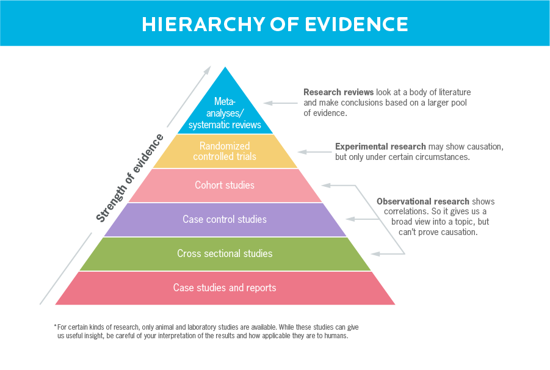
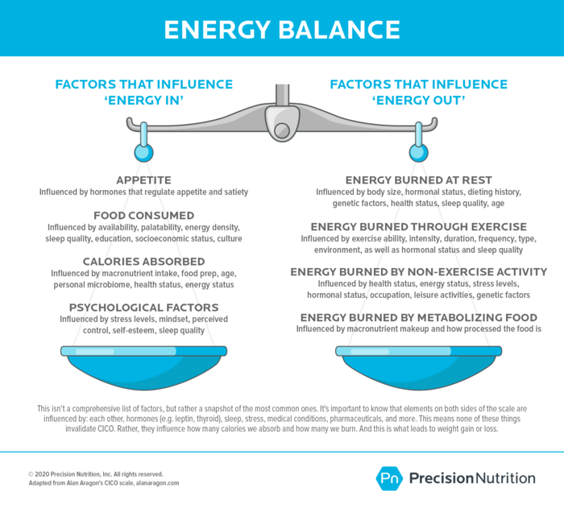
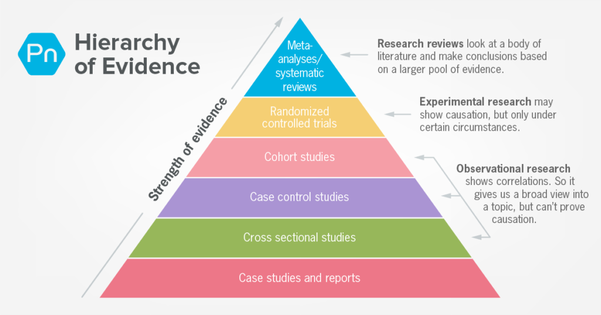
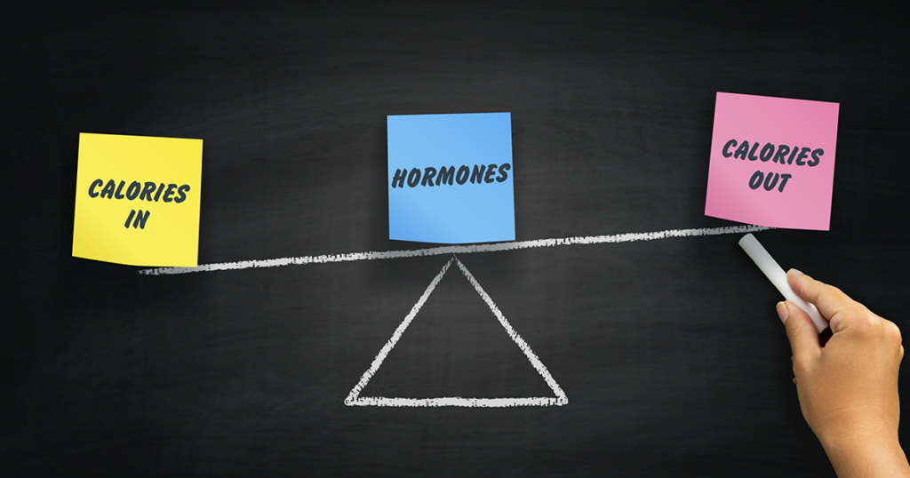

<!DOCTYPE html><html lang="en-US" class="no-js"><head>
<meta charset="UTF-8">
<meta name="viewport" content="initial-scale=1, maximum-scale=1, user-scalable=0">
<script>document.documentElement.className = document.documentElement.className.replace( "no-js", "js" )</script>

<script type="text/javascript">var kameleoonLoadingTimeout=1e3,kameleoonQueue=kameleoonQueue||[],kameleoonStartLoadTime=(new Date).getTime();if(!document.getElementById("kameleoonLoadingStyleSheet")&&!window.kameleoonDisplayPageTimeOut){var kameleoonS=document.getElementsByTagName("script")[0],kameleoonCc="* { visibility: hidden !important; background-image: none !important; }",kameleoonStn=document.createElement("style");kameleoonStn.type="text/css",kameleoonStn.id="kameleoonLoadingStyleSheet",kameleoonStn.styleSheet?kameleoonStn.styleSheet.cssText=kameleoonCc:kameleoonStn.appendChild(document.createTextNode(kameleoonCc)),kameleoonS.parentNode.insertBefore(kameleoonStn,kameleoonS),window.kameleoonDisplayPage=function(e){e||(window.kameleoonTimeout=!0),kameleoonStn.parentNode&&kameleoonStn.parentNode.removeChild(kameleoonStn)},window.kameleoonDisplayPageTimeOut=window.setTimeout(window.kameleoonDisplayPage,kameleoonLoadingTimeout)}</script>
<script type="text/javascript">window.kameleoonIframeURL="https://null.null/null",window.kameleoonLightIframe=!1;var kameleoonIframeOriginElement=document.createElement("a");if(kameleoonIframeOriginElement.href=kameleoonIframeURL,window.kameleoonIframeOrigin=kameleoonIframeOriginElement.origin||kameleoonIframeOriginElement.protocol+"//"+kameleoonIframeOriginElement.hostname,0!=location.href.indexOf(window.kameleoonIframeOrigin)){window.kameleoonLightIframe=!0;var kameleoonProcessMessageEvent=function(event){window.kameleoonIframeOrigin==event.origin&&event.data.slice&&"Kameleoon"==event.data.slice(0,9)&&(window.removeEventListener("message",kameleoonProcessMessageEvent),window.kameleoonExternalIFrameLoaded=!0,window.Kameleoon?(eval(event.data),Kameleoon.Analyst.load()):window.kameleoonExternalIFrameLoadedData=event.data)};window.addEventListener&&window.addEventListener("message",kameleoonProcessMessageEvent,!1);var iframeNode=document.createElement("iframe");iframeNode.src=kameleoonIframeURL,iframeNode.id="kameleoonExternalIframe",iframeNode.style="float: left !important; opacity: 0.0 !important; width: 0px !important; height: 0px !important;",document.head.appendChild(iframeNode)}</script>
<script type="text/javascript" src="files/js/kameleoon.js" async="true"></script>
<script>
	dataLayer = [];
</script>

<script>(function ( w, d, s, l, i ) {
		w[ l ] = w[ l ] || [];
		w[ l ].push( {
			'gtm.start' : new Date().getTime(), event : 'gtm.js'
		} );
		var f = d.getElementsByTagName( s )[ 0 ],
			j = d.createElement( s ), dl = l != 'dataLayer' ? '&l=' + l : '';
		j.async = true;
		j.src =
			'https://null.null/null' + i + dl;
		f.parentNode.insertBefore( j, f );
	})( window, document, 'script', 'dataLayer', 'GTM-5NMXHL' );</script>


<script type="text/javascript">
  window.heap=window.heap||[],heap.load=function(e,t){window.heap.appid=e,window.heap.config=t=t||{};var r=t.forceSSL||"https:"===document.location.protocol,a=document.createElement("script");a.type="text/javascript",a.async=!0,a.src=(r?"https:":"http:")+"https://null.null/null"+e+".js";var n=document.getElementsByTagName("script")[0];n.parentNode.insertBefore(a,n);for(var o=function(e){return function(){heap.push([e].concat(Array.prototype.slice.call(arguments,0)))}},p=["addEventProperties","addUserProperties","clearEventProperties","identify","removeEventProperty","setEventProperties","track","unsetEventProperty","resetIdentity"],c=0;c<p.length;c++)heap[p[c]]=o(p[c])};
  heap.load("1292665624");
</script>

<meta name="apple-mobile-web-app-title" content="Precision Nutrition">
<meta name="application-name" content="Precision Nutrition">
<link rel="apple-touch-icon" sizes="180x180" href="files/images/apple-touch-icon.png">
<link rel="icon" type="image/png" sizes="32x32" href="files/images/favicon-32x32.png">
<link rel="icon" type="image/png" sizes="16x16" href="files/images/favicon-16x16.png">
<link rel="manifest" href="https://null.null/null">
<link rel="mask-icon" color="#00bbe3" href="files/fonts/safari-pinned-tab.svg">
<link rel="shortcut icon" href="files/favicon.ico">
<meta name="msapplication-config" content="https://null.null/null">
<meta name="theme-color" content="#ffffff">
<script>
  (function(d) {
    var config = {
      kitId: 'mdv1txb',
      scriptTimeout: 3000,
      async: true
    },
    h=d.documentElement,t=setTimeout(function(){h.className=h.className.replace(/\bwf-loading\b/g,"")+" wf-inactive";},config.scriptTimeout),tk=d.createElement("script"),f=false,s=d.getElementsByTagName("script")[0],a;h.className+=" wf-loading";tk.src='https://null.null/null/'+config.kitId+'.js';tk.async=true;tk.onload=tk.onreadystatechange=function(){a=this.readyState;if(f||a&&a!="complete"&&a!="loaded")return;f=true;clearTimeout(t);try{Typekit.load(config)}catch(e){}};s.parentNode.insertBefore(tk,s)
  })(document);
</script>

<title>5 universal principles of good nutrition, according to science.</title>
<meta name="description" content="What nutrition advice can you really trust, according to science? Use these 5 nutrition principles to know what to eat for fat loss and overall health.">
<meta name="robots" content="index, follow">
<meta name="googlebot" content="index, follow, max-snippet:-1, max-image-preview:large, max-video-preview:-1">
<meta name="bingbot" content="index, follow, max-snippet:-1, max-image-preview:large, max-video-preview:-1">
<link rel="canonical" href="https://null.null/null">
<meta property="og:locale" content="en_US">
<meta property="og:type" content="article">
<meta property="og:title" content="The 5 universal principles of good nutrition, according to science.">
<meta property="og:description" content="Yes, nutrition is often confusing, uncertain, and hotly debated. But these principles are indisputable—and often transformative.">
<meta property="og:url" content="https://null.null/null">
<meta property="og:site_name" content="Precision Nutrition">
<meta property="article:publisher" content="https://null.null/null">
<meta property="article:published_time" content="2020-07-23T04:01:17+00:00">
<meta property="article:modified_time" content="2020-08-05T17:43:52+00:00">
<meta property="og:image" content="files/images/Beneficial-nutrients-feature-1024x538.png">
<meta property="og:image:width" content="1024">
<meta property="og:image:height" content="538">
<meta name="twitter:card" content="summary">
<meta name="twitter:title" content="The 5 universal principles of good nutrition, according to science.">
<meta name="twitter:description" content="Yes, nutrition is often confusing, uncertain, and hotly debated. But these principles are indisputable—and often transformative.">
<meta name="twitter:image" content="https://null.null/null">
<meta name="twitter:creator" content="@insidePN">
<meta name="twitter:site" content="@insidePN">
<script type="application/ld+json" class="yoast-schema-graph">{"@context":"https://null.null/null","@graph":[{"@type":"Organization","@id":"https://null.null/null","name":"Precision Nutrition","url":"https://null.null/null/","sameAs":["https://null.null/null","https://null.null/null","https://null.null/null","https://null.null/null","https://null.null/null"],"logo":{"@type":"ImageObject","@id":"https://null.null/null/#logo","inLanguage":"en-US","url":"https://null.null/null/wp-content/uploads/2018/02/pn-logo-mark-blue-text-gray.png","width":1209,"height":184,"caption":"Precision Nutrition"},"image":{"@id":"https://null.null/null/#logo"}},{"@type":"WebSite","@id":"https://null.null/null/#website","url":"https://null.null/null/","name":"Precision Nutrition","description":"Life-changing, research-driven nutrition coaching for everyone. Precision Nutrition will get you in the best shape of your life. 100% guaranteed.","publisher":{"@id":"https://null.null/null"},"potentialAction":[{"@type":"SearchAction","target":"https://null.null/null/?s={search_term_string}","query-input":"required name=search_term_string"}],"inLanguage":"en-US"},{"@type":"ImageObject","@id":"https://null.null/null#primaryimage","inLanguage":"en-US","url":"https://null.null/null","width":5000,"height":2626,"caption":"On the left, illustration of fast food burger with fries vs. six ounce tenderloin with baked potato and steamed broccoli, and their caloric value; on the right, bar graph comparing the burger and tenderloin's beneficial nutritional values"},{"@type":"WebPage","@id":"https://null.null/null#webpage","url":"https://null.null/null","name":"5 universal principles of good nutrition, according to science.","isPartOf":{"@id":"https://null.null/null/#website"},"primaryImageOfPage":{"@id":"https://null.null/null#primaryimage"},"datePublished":"2020-07-23T04:01:17+00:00","dateModified":"2020-08-05T17:43:52+00:00","description":"What nutrition advice can you really trust, according to science? Use these 5 nutrition principles to know what to eat for fat loss and overall health.","inLanguage":"en-US","potentialAction":[{"@type":"ReadAction","target":["https://null.null/null"]}]},{"@type":"Article","@id":"https://null.null/null#article","isPartOf":{"@id":"https://null.null/null#webpage"},"author":{"@id":"https://null.null/null/#/schema/person/38dd93062c3f9c88a6f4970549b31278"},"headline":"Level 1: The 5 universal principles of good nutrition, according to science.","datePublished":"2020-07-23T04:01:17+00:00","dateModified":"2020-08-05T17:43:52+00:00","mainEntityOfPage":{"@id":"https://null.null/null#webpage"},"publisher":{"@id":"https://null.null/null"},"image":{"@id":"https://null.null/null#primaryimage"},"articleSection":"Blog,Food &amp; Nutrition,Nutrition Science","inLanguage":"en-US"},{"@type":"Person","@id":"https://null.null/null/#/schema/person/38dd93062c3f9c88a6f4970549b31278","name":"Ryan Maciel, RD, Pn2, CSCS and Alisa Bowman"}]}</script>

<link rel="dns-prefetch" href="https://null.null/null">
<link rel="dns-prefetch" href="https://null.null/null">
<link rel="alternate" type="application/rss+xml" title="Precision Nutrition » Feed" href="https://null.null/null/feed">
<link rel="alternate" type="application/rss+xml" title="Precision Nutrition » Comments Feed" href="https://null.null/null/comments/feed">
<link rel="stylesheet" id="wp-block-library-css" href="files/css/style.min.css" type="text/css" media="all">
<link rel="stylesheet" id="general-styles-css" href="files/css/general.css" type="text/css" media="all">
<link rel="stylesheet" id="cookieconsent-css" href="files/css/cookieconsent.css" type="text/css" media="all">
<link rel="stylesheet" id="blog-css" href="files/css/blog.css" type="text/css" media="all">
<script type="text/javascript" src="//ajax.googleapis.com/ajax/libs/jquery/1.9.1/jquery.min.js?ver=1.9.1"></script>
<script type="text/javascript" defer="defer" src="files/js/api.js"></script>
<script type="text/javascript">
/* <![CDATA[ */
var pn2017GlobalVars = {"wpDebug":"","ajaxurl":"https:\/\/www.precisionnutrition.com\/wp-admin\/admin-ajax.php","userIp":"2.92.5.163","ajax_nonce":"4721564ddc"};
/* ]]> */
</script>
<script type="text/javascript" defer="defer" src="files/js/global.built.js"></script>
<script type="text/javascript" defer="defer" src="files/js/cookieconsent.min.js"></script>
<script type="text/javascript" defer="defer" src="files/js/pn-cookieconsent.min.js"></script>
<script type="text/javascript" defer="defer" src="files/js/jquery.fitvids.min.js"></script>
<link rel="https://null.null/null/" href="https://null.null/null/wp-json/">
<link rel="EditURI" type="application/rsd+xml" title="RSD" href="https://null.null/null/xmlrpc.php?rsd">
<link rel="wlwmanifest" type="application/wlwmanifest+xml" href="https://null.null/null/wp-includes/wlwmanifest.xml">
<link rel="shortlink" href="https://null.null/null/?p=102493">
<link rel="alternate" type="application/json+oembed" href="https://null.null/null/wp-json/oembed/1.0/embed?url=https%3A%2F%2Fwww.precisionnutrition.com%2Fprinciples-of-nutrition">
<link rel="alternate" type="text/xml+oembed" href="https://null.null/null/wp-json/oembed/1.0/embed?url=https%3A%2F%2Fwww.precisionnutrition.com%2Fprinciples-of-nutrition&format=xml">
<script>
			document.documentElement.className = document.documentElement.className.replace( 'no-js', 'js' );
		</script>
<style>
			.no-js img.lazyload { display: none; }
			figure.wp-block-image img.lazyloading { min-width: 150px; }
							.lazyload, .lazyloading { opacity: 0; }
				.lazyloaded {
					opacity: 1;
					transition: opacity 400ms;
					transition-delay: 0ms;
				}
					</style>
<style type="text/css" id="wp-custom-css">
			/*
 * 3/2/2018 - Fix js-inline lists when window is resized
 * 
 * 7/5/2019 - moving to theme styling - PS-744
 */
.pn-wysiwyg__c-list>ul {
	max-width: 100%;
}

/*
 * 3/6/2018 - Z Landing Page [pn2015] style updates
 * Fixed with PS-478-z-landing-page-style-update
 * UPDATE - only the title change is global, the testimonial edits are just for /whats-possible-with-the-precision-nutrition-certification
 *  * 
 * 7/5/2019 - moving to theme styling - PS-744
 */
#intro h1 span.title {
	margin: 12px 0;
	line-height: 1.2em;
}

/* fix lineheight of resource titles  * 7/19/2019 - moving to theme styling - PS-744
 */
.page-id-83336 .page-tpl-5-day-lesson .course-steps-container .course-steps-col .steps-right h2,
.page-id-83343 .page-tpl-5-day-lesson .course-steps-container .course-steps-col .steps-right h2,
.page-id-83347 .page-tpl-5-day-lesson .course-steps-container .course-steps-col .steps-right h2 {
	line-height: 1em;
}
/* fix certification section title
 * 7/19/2019 - moving to theme styling - PS-744
 */
.page-id-83331 .page-tpl-5-day-lesson .certification-left,
.page-id-83336 .page-tpl-5-day-lesson .certification-left,
.page-id-83343 .page-tpl-5-day-lesson .certification-left,
.page-id-83347 .page-tpl-5-day-lesson .certification-left,
.page-id-83334 .page-tpl-5-day-lesson .certification-left,
.page-id-83340 .page-tpl-5-day-lesson .certification-left,
.page-id-83345 .page-tpl-5-day-lesson .certification-left,
.page-id-83350 .page-tpl-5-day-lesson .certification-left{
	width: 475px;
}
@media only screen and (max-width: 950px) {
	.page-id-83331 .page-tpl-5-day-lesson .certification-left,
	.page-id-83331 .page-tpl-5-day-lesson .certification-right,
	.page-id-83336 .page-tpl-5-day-lesson .certification-left,
	.page-id-83336 .page-tpl-5-day-lesson .certification-right,
	.page-id-83343 .page-tpl-5-day-lesson .certification-left,
	.page-id-83343 .page-tpl-5-day-lesson .certification-right,
	.page-id-83347 .page-tpl-5-day-lesson .certification-left,	
	.page-id-83347 .page-tpl-5-day-lesson .certification-right,
	.page-id-83334 .page-tpl-5-day-lesson .certification-left,	
	.page-id-83334 .page-tpl-5-day-lesson .certification-right,
	.page-id-83340 .page-tpl-5-day-lesson .certification-left,	
	.page-id-83340 .page-tpl-5-day-lesson .certification-right,
	.page-id-83345 .page-tpl-5-day-lesson .certification-left,	
	.page-id-83345 .page-tpl-5-day-lesson .certification-right,
	.page-id-83350 .page-tpl-5-day-lesson .certification-left,	
	.page-id-83350 .page-tpl-5-day-lesson .certification-right {
		width: 100%;
	}
}
@media only screen and (max-width: 1100px) {
	.page-id-83331 .page-tpl-5-day-lesson .certification-right,
	.page-id-83336 .page-tpl-5-day-lesson .certification-right,
	.page-id-83343 .page-tpl-5-day-lesson .certification-right,
	.page-id-83347 .page-tpl-5-day-lesson .certification-right,
	.page-id-83334 .page-tpl-5-day-lesson .certification-right,
	.page-id-83340 .page-tpl-5-day-lesson .certification-right,
	.page-id-83345 .page-tpl-5-day-lesson .certification-right,
	.page-id-83350 .page-tpl-5-day-lesson .certification-right {
		width: 48%;
	}
}

/**
 * Update - 4-24-2018
 * Add extra indent to bulleted lists
 * 8/23/2019 - moving to theme styling - PS-744
 */
.list--indent {
	margin-left: 25px !important;
}
.list--condensed li {
	margin-bottom: 0 !important;
	line-height: 1.333em !important;
}

/**
 * Update - 6/1/2018
 * Change cta_overlay_men_women_coaching_form CTA styling
 */
/* adjust main titles */
#overlay.cta_overlay_men_women_coaching_form #overlay_cta h3,
body.body-transformation-secrets-coaching #overlay #overlay_cta h3 {
	margin-bottom: 12px;
}
#overlay.cta_overlay_men_women_coaching_form #overlay_cta h4,
body.body-transformation-secrets-coaching
#overlay #overlay_cta h4
{
  text-transform: none;
  font-size: 1.5em;
  letter-spacing: 0;
}
/* customize content */
#overlay.cta_overlay_men_women_coaching_form #overlay_cta p,
body.body-transformation-secrets-coaching #overlay #overlay_cta p {
	font-size: 1em;
}
/* customize subtitles */
#overlay.cta_overlay_men_women_coaching_form #overlay_cta .program,
body.body-transformation-secrets-coaching #overlay #overlay_cta .program {
	color: #FFFFFF;
	font-weight: 700;
	margin-bottom: 15px;
	text-align: left;
}
/* customize radio buttons
 * because of scale issues in Firefox, trying to add custom radio buttons instead
 */
.cta_overlay_men_women_coaching_form .pn-form--signup__step input[type="radio"],
body.body-transformation-secrets-coaching .pn-form--signup__step input[type="radio"] {
	display: none;
}
#overlay.cta_overlay_men_women_coaching_form #overlay_cta #radio_buttons,
body.body-transformation-secrets-coaching #overlay #overlay_cta #radio_buttons {
	margin-bottom: 1.1em;
	text-align: left;
}
#overlay.cta_overlay_men_women_coaching_form #overlay_cta #radio_buttons > div,
body.body-transformation-secrets-coaching #overlay #overlay_cta #radio_buttons > div{
  display: inline-block;
	margin-right:2.5em;
	min-height: 2.5em;
}
#overlay.cta_overlay_men_women_coaching_form #overlay_cta #radio_buttons label,
body.body-transformation-secrets-coaching #overlay #overlay_cta #radio_buttons label {
	font-weight: 400;
	vertical-align: middle;
	display: block;
	padding: 6px 0 0 42px;
	background: url('files/images/btn_radio_deselected2x.png') left top/32px 32px no-repeat;
	min-height: 32px;
}
#overlay.cta_overlay_men_women_coaching_form #overlay_cta #radio_buttons input[type=radio]:checked + label,
body.body-transformation-secrets-coaching #overlay #overlay_cta #radio_buttons input[type=radio]:checked + label{
	background: url('files/images/btn_radio_selected2x.png') left top/32px 32px no-repeat;
}
/* customize input fields */
body #overlay.cta_overlay_men_women_coaching_form #overlay_cta input[type="text"], body #overlay.cta_overlay_men_women_coaching_form #overlay_cta input[type="email"], body #overlay.cta_overlay_men_women_coaching_form #overlay_cta input[type="tel"], body #overlay.cta_overlay_men_women_coaching_form #overlay_cta select,
body.body-transformation-secrets-coaching #overlay #overlay_cta input[type="text"], body.body-transformation-secrets-coaching #overlay #overlay_cta input[type="email"], body.body-transformation-secrets-coaching #overlay #overlay_cta input[type="tel"], body.body-transformation-secrets-coaching #overlay #overlay_cta select {
	height: 2.5em;
	padding: 0.5em 0.95em;
}
#overlay.cta_overlay_men_women_coaching_form .pn-form--signup__field,
body.body-transformation-secrets-coaching #overlay .pn-form--signup__field {
	margin-bottom: 25px;
}
body #overlay.cta_overlay_men_women_coaching_form #overlay_cta .signup_form .cc_display,
body.body-transformation-secrets-coaching #overlay #overlay_cta .signup_form .cc_display{
	height: 100%;
	top: 50% !important;
  transform: translateY(-14%);
	-webkit-transform: translateY(-14%);
  -ms-transform: translateY(-14%);
}
/* customize submit button */
#overlay.cta_overlay_men_women_coaching_form #overlay_cta button,
body.body-transformation-secrets-coaching #overlay #overlay_cta button {
	background: #333333;
	margin-top: 0.5rem;
	padding: 0.7rem 4.6rem;
	text-transform: none;
}
/* customize sub-text */
#overlay.cta_overlay_men_women_coaching_form .pn-form--signup__subtext,
body.body-transformation-secrets-coaching #overlay .pn-form--signup__subtext {
	color: #000000;
	font-size: 12px;
	opacity: 0.5;
}
/* fix height issue on .body-transformation-secrets-coaching */
body.body-transformation-secrets-coaching .pn-course__overlay select {
	height: 2.5em !important;
}
/* responsive */
@media only screen and (max-width: 480px) {
#overlay.cta_overlay_men_women_coaching_form #overlay_cta button, body.body-transformation-secrets-coaching #overlay #overlay_cta button {
		padding: 0.7rem 1.5rem;
	}
}

/**
 * Update 8/9/2018
 * Style download buttons for Infographics Download page
 */
@media only screen and (min-width: 900px) {
  body .pn-infographic .pn-infographic--post__download {
	vertical-align: top;
		margin-top: 30px;
  }
}

/**
 * Update 12/4/2018
 * Ensure long links break to multiple lines
 */
p {
  overflow-wrap: break-word;
  word-wrap: break-word;
}

/**
 * Update 3/7/2019
 * Add space to bottom of list items
 */
.pn-list__spaced > li {
	margin-bottom: 30px;
}

/**
 * 3/22/2019
 * Hide Google recaptcha badge
 */
.grecaptcha-badge {
	display:none;
}

/**
 * 5/23/2019
 * Fix team member thumbnails
 */
.page-tpl--meet-team__members .individual .thumbnail_wrapper img {
	height: auto;
}

/**
 * 9/18/2019
 * Add styling for copyright symbol
 */
.copyright {
	font-size: 0.4em;
	top: -1em;
}


/**
 * 11/29/2019
 * Adjust 'save 30%' bubble on flexible sales page pricing box for L1v4 Upgrade sales page
 */
@media only screen and (max-width: 369px) {
  .pn-flex--pricing__boxes__price__save {
    font-size: 14px;
    right: -3.6em;
    bottom: -.5em;
    padding: .8em 0;
    height: 3em;
    width: 3em;
  }

  .pn-flex--pricing__boxes__price__save:before {
    content: "SAVE";
    display: block;
    font-size: 14px;
  }
}

/**
 * 3/11/2020
 * Adjust CTA & Related Posts sections to have default left aligned text.
 */
#signup_cta, #related_posts {
	text-align: left !important;
}

/**
 * 3/19/2020
 * Fix mobile menu
 */
header.pn-head--site--alt {
	z-index: 25;
}

/**
 * 5/14/2020
 * Add list-style-inside class
 */
.pn-list__inside {
	list-style-position: inside;
}

/**
 * 6/18/2020
 * Add basic list styling for emergencies
 */
.list--basic {
	list-style: disc;
	margin-left: 1.2em;
}
.list--basic li {
	margin-bottom: 0.5em;
}

/**
 * 6/30/2020
 * Fix submit button in mobile
 */
@media screen and (max-width: 767px) {
	body .pn-flex--popup .popup-form .button_blue {
		height: auto;
		padding: 8px 41px;
	}
}

/**
 * 8/28/2020
 * Fix lists in 
 */
.how-to-succeed-in-health-and-fitness-free-course-lesson-2 .page-tpl-5-day-lesson ul li:before {
  background: none;
}		</style>
</head>
<body class="post-template-default single single-post postid-102493 single-format-standard principles-of-nutrition">

<noscript>
	<iframe src="files/ns.html" height="0" width="0" style="display:none;visibility:hidden"></iframe>
</noscript>


<script type="text/javascript">
	var _kiq = _kiq || [];
	(function () {
		setTimeout( function () {
			var d = document, f = d.getElementsByTagName( 'script' )[ 0 ], s = d.createElement( 'script' );
			s.type = 'text/javascript';
			s.async = true;
			s.src = 'https://null.null/null';
			f.parentNode.insertBefore( s, f );
		}, 1 );
	})();
</script>
<header id="top" class="pn-head--site pn-head--site--alt pn-out">
<div class="pn-in">
<svg xmlns="http://www.w3.org/2000/svg" viewBox="0 0 500 264.819" class="pn-svg pn-head--site__bars js-nav-main-trigger"><path d="M500 18.75c0 10.315-8.436 18.75-18.75 18.75H18.75C8.435 37.5 0 29.065 0 18.75S8.435 0 18.75 0h462.5C491.564 0 500 8.435 500 18.75zM18.75 150.757h312.5c10.315 0 18.75-8.435 18.75-18.75s-8.435-18.75-18.75-18.75H18.75c-10.315 0-18.75 8.435-18.75 18.75s8.435 18.75 18.75 18.75zm387.5 76.562H18.75c-10.315 0-18.75 8.435-18.75 18.75 0 10.314 8.435 18.75 18.75 18.75h387.5c10.314 0 18.75-8.435 18.75-18.75s-8.436-18.75-18.75-18.75z"/></svg>
<a class="pn-head--home" href="?lp=1" title="Go to homepage"><svg xmlns="http://www.w3.org/2000/svg" viewBox="0 0 612 92.77" class="pn-svg pn-head--site__logo pn-svg--logo">
<path fill="#20262B" class="pn-svg pn-head--site__logo--logo__text" d="M253.014,22.237h7.296v7.297h-7.296V22.237z M253.014,63.93h7.296V34.397h-7.296V63.93z M281.853,46.21
	c-5.212-2.084-6.602-2.432-6.602-4.518c0-1.736,1.043-2.431,4.864-2.431c2.779,0,6.601,0.695,9.033,1.389l1.39-5.211
	c-3.126-1.042-7.644-1.389-10.423-1.389c-7.644,0-11.813,2.779-11.813,8.338c0,4.865,2.432,6.604,10.423,9.729
	c4.169,1.737,5.56,2.432,5.56,4.17c0,1.389-1.39,2.778-5.212,2.778c-3.127,0-6.948-0.693-10.423-2.084l-1.737,5.211
	c3.821,1.392,8.338,2.434,12.16,2.434c7.644,0,12.509-3.823,12.509-9.034C291.582,50.38,289.149,48.991,281.853,46.21z
	 M238.421,39.956c1.738,0,3.823,0.347,5.907,0.694l1.39-5.211c-2.432-1.042-4.864-1.389-7.644-1.389
	c-9.729,0-16.33,6.601-16.33,15.287c0,8.686,6.601,15.289,16.33,15.289c2.432,0,5.56-0.696,7.644-1.738l-1.39-5.211
	c-2.085,0.695-3.823,1.042-5.907,1.042c-6.254,0-9.381-3.822-9.381-9.382C229.04,43.779,232.168,39.957,238.421,39.956z
	 M165.109,36.483c0,6.948-5.212,12.854-13.204,12.854H139.05V63.93h-7.645V27.448c0-2.084,1.738-3.822,3.823-3.822h16.677
	C159.897,23.626,165.109,29.534,165.109,36.483z M157.117,36.483c0-3.822-3.127-6.254-6.602-6.254h-11.813v12.507h11.813
	C153.99,42.736,157.117,40.305,157.117,36.483z M297.835,63.93h7.297V34.397h-7.297V63.93z M176.574,39.609v-5.212h-7.297V63.93
	h7.297V50.727c0-5.906,3.127-9.728,10.077-10.076v-6.949C182.134,33.702,177.964,36.83,176.574,39.609z M216.879,48.991v2.432h-20.5
	v0.347c0,4.518,3.822,6.949,9.382,6.949c2.779,0,5.906-0.348,8.686-1.39l1.389,5.212c-3.473,1.043-6.254,1.736-10.075,1.736
	c-10.771,0-16.679-6.254-16.679-15.286c0-7.993,5.213-15.29,14.246-15.29C212.015,33.702,216.879,39.957,216.879,48.991z
	 M210.277,46.559c-0.347-4.17-2.432-6.949-6.601-6.949c-3.822,0-6.602,2.432-7.297,6.949H210.277z M297.835,29.534h7.297v-7.297
	h-7.297V29.534z M539.662,63.93h5.211V34.397h-5.211V63.93z M529.238,60.109c-2.084,0-3.473-1.042-3.473-4.517V38.22h5.904v-3.822
	h-5.904V26.06h-5.213v8.338h-3.822v4.169h4.17v17.372c0,6.254,3.125,8.688,7.992,8.688c1.041,0,2.777-0.349,3.818-1.042
	l-0.691-3.823C530.977,60.108,529.934,60.108,529.238,60.109z M539.662,29.534h5.211v-6.602h-5.211V29.534z M503.875,29.534h5.211
	v-6.602h-5.211V29.534z M601.854,34.05c-4.168,0-7.99,2.433-10.074,5.559v-5.212h-5.213V63.93h5.213V48.295
	c0-5.907,4.516-9.729,8.686-9.729c4.52,0,6.256,2.085,6.256,6.603V63.93v0.348h5.211V45.169
	C611.932,38.567,608.459,34.051,601.854,34.05z M581.008,49.338c0,7.992-5.559,15.289-14.244,15.289
	c-8.688,0-14.244-7.297-14.244-15.289c0-8.338,5.557-15.287,14.244-15.287C575.449,34.051,581.008,41.346,581.008,49.338z
	 M575.797,49.338c0-6.601-3.475-11.118-9.033-11.118c-5.561,0-9.035,4.516-9.035,11.118c0,6.602,3.475,11.119,9.035,11.119
	C572.322,60.457,575.797,55.939,575.797,49.338z M472.951,60.109c-2.084,0-3.475-1.042-3.475-4.517V38.22h5.906v-3.822h-5.906V26.06
	h-5.211v8.338h-3.822v4.169h3.822v17.372c0,6.254,3.127,8.688,7.992,8.688c1.041,0,2.777-0.349,4.168-1.042l-0.695-3.823
	C474.688,60.108,473.646,60.108,472.951,60.109z M448.631,50.033c0,5.559-4.52,9.381-8.688,9.381c-4.516,0-6.254-2.085-6.254-6.603
	V34.397h-5.211v19.11c0,6.602,3.475,10.771,10.076,10.771c4.17,0,7.99-2.432,10.076-5.559v5.211h5.211V34.397h-5.211V50.033z
	 M415.275,54.202l-23.281-30.229c-0.693-0.696-1.041-1.043-2.084-1.043c-1.389,0-2.779,1.39-2.779,2.78V63.93h5.213V33.007
	l23.277,30.229c0.695,1.042,1.393,1.042,2.086,1.042c1.389,0,2.777-1.042,2.777-2.778V23.626h-5.209V54.202z M365.24,34.051
	c-4.516,0-8.338,2.432-10.076,5.211v-4.865h-7.295v29.187h7.295V47.253c0-4.17,3.475-6.949,6.949-6.949s5.211,2.084,5.211,5.907
	V63.93h7.645V45.169C374.969,38.567,371.842,34.051,365.24,34.051z M488.238,40.304v-5.907h-5.211v29.534h5.211V49.686
	c0-5.559,4.518-11.119,10.076-10.771v-4.864C493.797,34.051,489.977,37.178,488.238,40.304z M503.875,63.93h5.211V34.397h-5.211
	V63.93z M341.613,49.338c0,7.992-6.254,15.289-14.938,15.289c-9.035,0-14.941-7.297-14.941-15.289s5.906-15.287,14.941-15.287
	C335.709,34.051,341.613,41.346,341.613,49.338z M334.318,48.991c0-5.561-3.127-9.382-7.643-9.382c-4.867,0-7.301,3.822-7.301,9.382
	c0,5.559,2.781,9.381,7.301,9.381C331.539,58.372,334.318,54.55,334.318,48.991z"/>
<path fill="#00BBE3" class="pn-svg pn-head--site__logo--logo__mark" d="M47.602,36.135c0,4.169-3.127,7.296-7.644,7.296H27.102V28.838h0.695h12.161
	C44.475,28.838,47.602,31.965,47.602,36.135z M102.498,51.423L81.305,87.906c-1.39,2.779-5.56,4.863-8.687,4.863H30.923
	c-3.127,0-6.95-2.432-8.686-4.863L1.042,51.423c-1.39-2.78-1.39-7.296,0-10.077L22.237,4.864C23.627,2.432,27.796,0,30.923,0h42.041
	c3.128,0,6.95,2.432,8.687,4.864l21.195,36.482C104.236,44.127,104.236,48.643,102.498,51.423z M54.203,36.135
	c0-7.297-5.559-12.509-13.203-12.509H23.626c-1.737,0-3.127,1.39-3.127,3.127c0,0,0,35.788,0,37.177c1.043,0,5.56,0,6.602,0
	c0-1.389,0-14.938,0-14.938H41C48.644,48.643,54.203,43.432,54.203,36.135z M85.127,46.906c0-7.296-5.906-12.855-13.551-12.855
	c-7.644,0-13.551,5.559-13.551,12.855c0,0,0,15.636,0,17.024c1.043,0,5.212,0,6.254,0c0-1.389,0-17.024,0-17.024
	c0-4.518,2.779-7.296,7.296-7.296c4.517,0,7.297,3.126,7.297,7.296c0,0,0,15.636,0,17.024c1.042,0,5.211,0,6.254,0
	C85.126,62.542,85.126,46.907,85.127,46.906z"/>
</svg>
</a>
<ul id="js-nav-main-desktop" class="pn-head--site__nav"><li id="menu-item-73286" class="menu-item menu-item-type-custom menu-item-object-custom menu-item-has-children menu-item-73286 pn-head--site__nav__item"><a href="#">Professional Education</a>
<ul class="sub-menu">
<li id="menu-item-73287" class="menu-item menu-item-type-custom menu-item-object-custom menu-item-73287 sub-menu__item"><a href="?lp=1">Level 1 Nutrition Certification</a></li>
<li id="menu-item-73288" class="menu-item menu-item-type-custom menu-item-object-custom menu-item-73288 sub-menu__item"><a href="?lp=1">Level 2 Master Class</a></li>
<li id="menu-item-110514" class="menu-item menu-item-type-custom menu-item-object-custom menu-item-110514 sub-menu__item"><a href="?lp=1">Macros Course</a></li>
</ul>
</li>
<li id="menu-item-73283" class="menu-item menu-item-type-custom menu-item-object-custom menu-item-has-children menu-item-73283 pn-head--site__nav__item"><a href="#">Personal Coaching</a>
<ul class="sub-menu">
<li id="menu-item-73284" class="menu-item menu-item-type-custom menu-item-object-custom menu-item-73284 sub-menu__item"><a href="?lp=1">Coaching for Women</a></li>
<li id="menu-item-73285" class="menu-item menu-item-type-custom menu-item-object-custom menu-item-73285 sub-menu__item"><a href="?lp=1">Coaching for Men</a></li>
</ul>
</li>
<li id="menu-item-73289" class="menu-item menu-item-type-custom menu-item-object-custom menu-item-73289 pn-head--site__nav__item"><a href="?lp=1">Nutrition Software</a></li>
<li id="menu-item-73290" class="menu-item menu-item-type-custom menu-item-object-custom menu-item-has-children menu-item-73290 pn-head--site__nav__item"><a href="?lp=1">Resources and Articles</a>
<ul class="sub-menu">
<li id="menu-item-109466" class="menu-item menu-item-type-taxonomy menu-item-object-category menu-item-109466 sub-menu__item"><a href="?lp=1">Most Popular</a></li>
<li id="menu-item-102781" class="menu-item menu-item-type-taxonomy menu-item-object-category menu-item-102781 sub-menu__item"><a href="?lp=1">Free Courses & Guides</a></li>
<li id="menu-item-102782" class="menu-item menu-item-type-taxonomy menu-item-object-category menu-item-102782 sub-menu__item"><a href="?lp=1">Infographics</a></li>
<li id="menu-item-102783" class="menu-item menu-item-type-taxonomy menu-item-object-category menu-item-102783 sub-menu__item"><a href="?lp=1">Industry Reports</a></li>
<li id="menu-item-102784" class="menu-item menu-item-type-taxonomy menu-item-object-category menu-item-102784 sub-menu__item"><a href="?lp=1">Coaching Resources</a></li>
<li id="menu-item-102785" class="menu-item menu-item-type-taxonomy menu-item-object-category menu-item-102785 sub-menu__item"><a href="?lp=1">Fitness & Workouts</a></li>
<li id="menu-item-102786" class="menu-item menu-item-type-taxonomy menu-item-object-category menu-item-102786 sub-menu__item"><a href="?lp=1">Fitness Career</a></li>
<li id="menu-item-102787" class="menu-item menu-item-type-taxonomy menu-item-object-category current-post-ancestor current-menu-parent current-post-parent menu-item-102787 sub-menu__item"><a href="?lp=1">Food & Nutrition</a></li>
<li id="menu-item-102788" class="menu-item menu-item-type-taxonomy menu-item-object-category menu-item-102788 sub-menu__item"><a href="?lp=1">Healthy Living</a></li>
<li id="menu-item-102789" class="menu-item menu-item-type-taxonomy menu-item-object-category menu-item-102789 sub-menu__item"><a href="?lp=1">Calculators</a></li>
<li id="menu-item-102790" class="menu-item menu-item-type-taxonomy menu-item-object-category menu-item-102790 sub-menu__item"><a href="?lp=1">Nutrition Psychology</a></li>
<li id="menu-item-102791" class="menu-item menu-item-type-taxonomy menu-item-object-category current-post-ancestor current-menu-parent current-post-parent menu-item-102791 sub-menu__item"><a href="?lp=1">Nutrition Science</a></li>
<li id="menu-item-102792" class="menu-item menu-item-type-taxonomy menu-item-object-category menu-item-102792 sub-menu__item"><a href="?lp=1">Weight Loss</a></li>
</ul>
</li>
<li id="menu-item-73291" class="button header-sign-in menu-item menu-item-type-custom menu-item-object-custom menu-item-73291 pn-head--site__nav__item"><a rel="nofollow" href="?lp=1">Sign In</a></li>
</ul><ul id="js-nav-main" class="pn-head--site__nav">
<li class="pn-head--site__nav__close js-nav-main-trigger"><svg xmlns="http://www.w3.org/2000/svg" viewBox="0 0 500 498.452" class="pn-svg pn-head--site__nav__close__svg"><path d="M328.469 169.999c-6.108-6.088-16.339-5.74-22.854.714l-56.369 56.044-56.36-56.044c-6.511-6.454-16.745-6.802-22.854-.714-6.105 6.048-5.78 16.234.734 22.712l56.365 56.028-56.356 56.04c-6.523 6.45-6.864 16.632-.751 22.717 6.109 6.061 16.352 5.728 22.862-.755l56.36-56.012 56.369 56.012c6.515 6.482 16.753 6.791 22.854.746 6.109-6.085 5.777-16.241-.737-22.708l-56.369-56.04 56.369-56.028c6.514-6.478 6.846-16.648.737-22.712M249.23 0C111.582 0 0 111.59 0 249.214c0 137.653 111.582 249.238 249.23 249.238 137.645 0 249.222-111.585 249.222-249.238C498.452 111.59 386.875 0 249.23 0m0 465.237c-119.289 0-216-96.739-216-216.023 0-119.272 96.711-215.991 216-215.991 119.292 0 216 96.719 216 215.991 0 119.284-96.708 216.023-216 216.023"/></svg> </li>
<li class="pn-head--site__nav__home"><a href="?lp=1">
<svg xmlns:dc="https://null.null/null" xmlns:cc="https://null.null/null" xmlns:rdf="http://www.w3.org/1999/02/22-rdf-syntax-ns#" xmlns:svg="http://www.w3.org/2000/svg" xmlns="http://www.w3.org/2000/svg" xmlns:sodipodi="https://null.null/null" xmlns:inkscape="https://null.null/null" viewBox="0 0 253.39 226.725" class="pn-svg pn-head--site__nav__home__svg" version="1.1" id="svg827" sodipodi:docname="pn-logo-mark-blue.svg" inkscape:version="0.92.4 (5da689c313, 2019-01-14)">
<metadata id="metadata833">
<rdf:rdf>
<cc:work rdf:about="">
<dc:format>image/svg+xml</dc:format>
<dc:type rdf:resource="https://null.null/null"/>
<dc:title/>
</cc:work>
</rdf:rdf>
</metadata>
<defs id="defs831"/>
<sodipodi:namedview pagecolor="#ffffff" bordercolor="#666666" borderopacity="1" objecttolerance="10" gridtolerance="10" guidetolerance="10" inkscape:pageopacity="0" inkscape:pageshadow="2" inkscape:window-width="1920" inkscape:window-height="1017" id="namedview829" showgrid="false" inkscape:pagecheckerboard="true" inkscape:zoom="3.7402138" inkscape:cx="126.695" inkscape:cy="134.75165" inkscape:window-x="1912" inkscape:window-y="-8" inkscape:window-maximized="1" inkscape:current-layer="svg827"/>
<path d="M116.149,88.088c0,10.035-7.805,17.84-18.584,17.84H65.973v-35.31h1.858h29.735  C108.344,70.619,116.149,78.052,116.149,88.088z M250.325,125.628l-51.29,88.83c-3.718,6.691-13.381,12.267-21.187,12.267H75.264  c-7.805,0-17.097-5.576-21.185-12.267l-51.292-88.83c-3.717-6.69-3.717-17.841,0-24.531l51.292-88.832  C57.796,5.575,67.459,0,75.264,0h102.584c7.805,0,17.097,5.575,21.187,12.265l51.29,88.832  C254.412,107.787,254.412,118.938,250.325,125.628z M132.131,88.088c0-17.47-13.752-30.85-31.964-30.85h-42  c-4.46,0-7.805,3.717-7.805,7.805c0,0,0,87.344,0,90.688c2.602,0,13.38,0,15.982,0c0-3.344,0-36.794,0-36.794h34.195  C118.751,118.938,132.131,105.928,132.131,88.088z M207.209,114.477c0-17.84-14.122-31.593-33.079-31.593  c-18.955,0-33.079,13.753-33.079,31.593c0,0,0,37.911,0,41.255c2.601,0,13.01,0,15.611,0c0-3.344,0-41.255,0-41.255  c0-10.778,7.062-18.211,17.468-18.211c10.408,0,17.468,7.434,17.468,18.211c0,0,0,37.911,0,41.255c2.603,0,13.009,0,15.61,0  C207.209,152.388,207.209,114.477,207.209,114.477z" id="path825" style="fill:#00bbe3;fill-opacity:1"/>
<path style="opacity:0;fill:#00ffff;fill-opacity:1;fill-rule:nonzero;stroke:#00bbe3;stroke-width:0.26736438;stroke-opacity:1" d="m 71.72488,226.21344 c -6.420101,-1.32576 -13.118966,-5.61482 -16.697724,-10.691 -2.040461,-2.89423 -52.6484521,-90.85956 -53.2901135,-92.62732 -2.27649335,-6.27166 -2.08471868,-14.57838 0.4663622,-20.20046 0.94155,-2.07499 52.1713283,-90.773511 53.3775533,-92.417149 3.250868,-4.4297266 9.791291,-8.4166114 15.960879,-9.72936916 2.736403,-0.58224844 107.249083,-0.58224844 109.985483,0 6.77801,1.44221516 13.61833,5.99386816 17.05078,11.34583416 0.62376,0.972589 12.71819,21.841713 26.8765,46.375832 16.13358,27.956928 25.97533,45.277292 26.36644,46.401932 1.92584,5.53776 1.84211,12.6965 -0.20987,17.94157 -0.66367,1.69643 -52.1209,91.01889 -53.84234,93.46269 -2.92276,4.14921 -8.56677,7.94529 -14.553,9.78812 l -2.00523,0.6173 -53.87393,0.0454 c -44.168251,0.0373 -54.187008,-0.0192 -55.61179,-0.31343 z m -5.347288,-88.74408 v -18.29714 l 19.317078,-0.10535 c 18.7013,-0.10199 19.40012,-0.12402 21.92224,-0.69089 9.80987,-2.20488 17.04001,-7.56463 21.20127,-15.71662 2.31076,-4.526829 3.33105,-8.987004 3.33105,-14.561597 0,-8.834324 -3.1342,-16.325147 -9.28751,-22.197378 -4.68251,-4.468614 -10.78096,-7.389602 -17.48324,-8.373989 -4.18145,-0.614144 -47.558706,-0.626095 -49.62096,-0.01366 -1.615025,0.479609 -3.832377,2.356272 -4.699851,3.977725 l -0.588258,1.099547 -0.0698,46.588242 -0.0698,46.58825 h 8.023892 8.023888 z m 90.438448,-4.22831 c 0.10128,-24.79438 0.0141,-23.4595 1.78575,-27.32837 3.2471,-7.090723 11.16968,-10.791653 19.4433,-9.082689 6.30342,1.302006 10.72395,5.449419 12.70873,11.923509 0.60036,1.95833 0.60168,2.00536 0.68595,24.48755 l 0.0844,22.52545 h 7.87722 7.87722 v -22.15623 c 0,-18.43681 -0.0669,-22.54006 -0.39873,-24.4427 -2.39663,-13.74329 -12.98899,-23.863321 -27.18307,-25.970941 -17.23574,-2.55926 -32.99027,6.828807 -37.4843,22.336771 -1.18882,4.10237 -1.24027,5.27761 -1.24027,28.32856 v 21.90454 h 7.87588 7.87589 z" id="path835" inkscape:connector-curvature="0"/>
<path style="opacity:0;fill:#00ffff;fill-opacity:1;fill-rule:nonzero;stroke:#00bbe3;stroke-width:0.26736438;stroke-opacity:1" d="m 71.72488,226.21344 c -6.420101,-1.32576 -13.118966,-5.61482 -16.697724,-10.691 -2.040461,-2.89423 -52.6484521,-90.85956 -53.2901135,-92.62732 -2.27649335,-6.27166 -2.08471868,-14.57838 0.4663622,-20.20046 0.94155,-2.07499 52.1713283,-90.773511 53.3775533,-92.417149 3.250868,-4.4297266 9.791291,-8.4166114 15.960879,-9.72936916 2.736403,-0.58224844 107.249083,-0.58224844 109.985483,0 6.77801,1.44221516 13.61833,5.99386816 17.05078,11.34583416 0.62376,0.972589 12.71819,21.841713 26.8765,46.375832 16.13358,27.956928 25.97533,45.277292 26.36644,46.401932 1.92584,5.53776 1.84211,12.6965 -0.20987,17.94157 -0.66367,1.69643 -52.1209,91.01889 -53.84234,93.46269 -2.92276,4.14921 -8.56677,7.94529 -14.553,9.78812 l -2.00523,0.6173 -53.87393,0.0454 c -44.168251,0.0373 -54.187008,-0.0192 -55.61179,-0.31343 z m -5.347288,-88.74408 v -18.29714 l 19.317078,-0.10535 c 18.7013,-0.10199 19.40012,-0.12402 21.92224,-0.69089 9.80987,-2.20488 17.04001,-7.56463 21.20127,-15.71662 2.31076,-4.526829 3.33105,-8.987004 3.33105,-14.561597 0,-8.834324 -3.1342,-16.325147 -9.28751,-22.197378 -4.68251,-4.468614 -10.78096,-7.389602 -17.48324,-8.373989 -4.18145,-0.614144 -47.558706,-0.626095 -49.62096,-0.01366 -1.615025,0.479609 -3.832377,2.356272 -4.699851,3.977725 l -0.588258,1.099547 -0.0698,46.588242 -0.0698,46.58825 h 8.023892 8.023888 z m 90.438448,-4.22831 c 0.10128,-24.79438 0.0141,-23.4595 1.78575,-27.32837 3.2471,-7.090723 11.16968,-10.791653 19.4433,-9.082689 6.30342,1.302006 10.72395,5.449419 12.70873,11.923509 0.60036,1.95833 0.60168,2.00536 0.68595,24.48755 l 0.0844,22.52545 h 7.87722 7.87722 v -22.15623 c 0,-18.43681 -0.0669,-22.54006 -0.39873,-24.4427 -2.39663,-13.74329 -12.98899,-23.863321 -27.18307,-25.970941 -17.23574,-2.55926 -32.99027,6.828807 -37.4843,22.336771 -1.18882,4.10237 -1.24027,5.27761 -1.24027,28.32856 v 21.90454 h 7.87588 7.87589 z" id="path837" inkscape:connector-curvature="0"/>
<path style="opacity:0;fill:#00ffff;fill-opacity:1;fill-rule:nonzero;stroke:#00bbe3;stroke-width:0.26736438;stroke-opacity:1" d="m 71.72488,226.21344 c -6.420101,-1.32576 -13.118966,-5.61482 -16.697724,-10.691 -2.040461,-2.89423 -52.6484521,-90.85956 -53.2901135,-92.62732 -2.27649335,-6.27166 -2.08471868,-14.57838 0.4663622,-20.20046 0.94155,-2.07499 52.1713283,-90.773511 53.3775533,-92.417149 3.250868,-4.4297266 9.791291,-8.4166114 15.960879,-9.72936916 2.736403,-0.58224844 107.249083,-0.58224844 109.985483,0 6.77801,1.44221516 13.61833,5.99386816 17.05078,11.34583416 0.62376,0.972589 12.71819,21.841713 26.8765,46.375832 16.13358,27.956928 25.97533,45.277292 26.36644,46.401932 1.92584,5.53776 1.84211,12.6965 -0.20987,17.94157 -0.66367,1.69643 -52.1209,91.01889 -53.84234,93.46269 -2.92276,4.14921 -8.56677,7.94529 -14.553,9.78812 l -2.00523,0.6173 -53.87393,0.0454 c -44.168251,0.0373 -54.187008,-0.0192 -55.61179,-0.31343 z m -5.347288,-88.74408 v -18.29714 l 19.317078,-0.10535 c 18.7013,-0.10199 19.40012,-0.12402 21.92224,-0.69089 9.80987,-2.20488 17.04001,-7.56463 21.20127,-15.71662 2.31076,-4.526829 3.33105,-8.987004 3.33105,-14.561597 0,-8.834324 -3.1342,-16.325147 -9.28751,-22.197378 -4.68251,-4.468614 -10.78096,-7.389602 -17.48324,-8.373989 -4.18145,-0.614144 -47.558706,-0.626095 -49.62096,-0.01366 -1.615025,0.479609 -3.832377,2.356272 -4.699851,3.977725 l -0.588258,1.099547 -0.0698,46.588242 -0.0698,46.58825 h 8.023892 8.023888 z m 90.438448,-4.22831 c 0.10128,-24.79438 0.0141,-23.4595 1.78575,-27.32837 3.2471,-7.090723 11.16968,-10.791653 19.4433,-9.082689 6.30342,1.302006 10.72395,5.449419 12.70873,11.923509 0.60036,1.95833 0.60168,2.00536 0.68595,24.48755 l 0.0844,22.52545 h 7.87722 7.87722 v -22.15623 c 0,-18.43681 -0.0669,-22.54006 -0.39873,-24.4427 -2.39663,-13.74329 -12.98899,-23.863321 -27.18307,-25.970941 -17.23574,-2.55926 -32.99027,6.828807 -37.4843,22.336771 -1.18882,4.10237 -1.24027,5.27761 -1.24027,28.32856 v 21.90454 h 7.87588 7.87589 z" id="path839" inkscape:connector-curvature="0"/>
<path style="opacity:0;fill:#00ffff;fill-opacity:1;fill-rule:nonzero;stroke:#00bbe3;stroke-width:0.26736438;stroke-opacity:1" d="m 50.603093,109.56008 c 0,-50.837082 -0.124676,-47.261607 1.72329,-49.420541 0.490696,-0.573267 1.536913,-1.399414 2.324927,-1.835881 l 1.432753,-0.793577 h 24.463842 c 24.182795,0 24.491775,0.0067 26.894975,0.580549 12.24343,2.923709 20.58908,10.875793 23.6991,22.581493 0.51732,1.947137 0.59463,2.914303 0.59561,7.451181 10e-4,4.470499 -0.0816,5.540111 -0.57913,7.504352 -3.26421,12.886544 -13.38463,21.554344 -26.81512,22.966264 -1.41917,0.1492 -10.415055,0.26907 -20.386539,0.27166 l -17.846573,0.005 v 18.31446 18.31446 h -7.753567 -7.753568 z m 52.269737,-4.13347 c 0.8823,-0.25325 2.62686,-0.96893 3.87679,-1.5904 4.31687,-2.14635 7.847,-6.596189 8.99196,-11.334637 0.58776,-2.432455 0.57656,-6.649829 -0.0237,-8.923463 C 113.9295,76.803991 108.28591,71.911252 100.95005,70.775056 99.691205,70.580084 93.298049,70.477254 82.435063,70.477254 H 65.842864 v 17.790499 17.790497 l 17.712891,-0.0856 c 15.796669,-0.0763 17.886435,-0.1354 19.317075,-0.54606 z" id="path841" inkscape:connector-curvature="0"/>
<path style="opacity:0;fill:#00ffff;fill-opacity:1;fill-rule:nonzero;stroke:#00bbe3;stroke-width:0.26736438;stroke-opacity:1" d="m 71.72488,226.21344 c -6.420101,-1.32576 -13.118966,-5.61482 -16.697724,-10.691 -2.040461,-2.89423 -52.6484521,-90.85956 -53.2901135,-92.62732 -2.27649335,-6.27166 -2.08471868,-14.57838 0.4663622,-20.20046 0.94155,-2.07499 52.1713283,-90.773511 53.3775533,-92.417149 3.250868,-4.4297266 9.791291,-8.4166114 15.960879,-9.72936916 2.736403,-0.58224844 107.249083,-0.58224844 109.985483,0 6.77801,1.44221516 13.61833,5.99386816 17.05078,11.34583416 0.62376,0.972589 12.71819,21.841713 26.8765,46.375832 16.13358,27.956928 25.97533,45.277292 26.36644,46.401932 1.92584,5.53776 1.84211,12.6965 -0.20987,17.94157 -0.66367,1.69643 -52.1209,91.01889 -53.84234,93.46269 -2.92276,4.14921 -8.56677,7.94529 -14.553,9.78812 l -2.00523,0.6173 -53.87393,0.0454 c -44.168251,0.0373 -54.187008,-0.0192 -55.61179,-0.31343 z m -5.347288,-88.74408 v -18.29714 l 19.317078,-0.10535 c 18.7013,-0.10199 19.40012,-0.12402 21.92224,-0.69089 9.80987,-2.20488 17.04001,-7.56463 21.20127,-15.71662 2.31076,-4.526829 3.33105,-8.987004 3.33105,-14.561597 0,-8.834324 -3.1342,-16.325147 -9.28751,-22.197378 -4.68251,-4.468614 -10.78096,-7.389602 -17.48324,-8.373989 -4.18145,-0.614144 -47.558706,-0.626095 -49.62096,-0.01366 -1.615025,0.479609 -3.832377,2.356272 -4.699851,3.977725 l -0.588258,1.099547 -0.0698,46.588242 -0.0698,46.58825 h 8.023892 8.023888 z m 90.438448,-4.22831 c 0.10128,-24.79438 0.0141,-23.4595 1.78575,-27.32837 3.2471,-7.090723 11.16968,-10.791653 19.4433,-9.082689 6.30342,1.302006 10.72395,5.449419 12.70873,11.923509 0.60036,1.95833 0.60168,2.00536 0.68595,24.48755 l 0.0844,22.52545 h 7.87722 7.87722 v -22.15623 c 0,-18.43681 -0.0669,-22.54006 -0.39873,-24.4427 -2.39663,-13.74329 -12.98899,-23.863321 -27.18307,-25.970941 -17.23574,-2.55926 -32.99027,6.828807 -37.4843,22.336771 -1.18882,4.10237 -1.24027,5.27761 -1.24027,28.32856 v 21.90454 h 7.87588 7.87589 z" id="path843" inkscape:connector-curvature="0"/>
<path style="opacity:0;fill:#00ffff;fill-opacity:1;fill-rule:nonzero;stroke:#00bbe3;stroke-width:0.26736438;stroke-opacity:1" d="m 141.23962,133.47659 c 0,-24.13482 0.0109,-24.33088 1.61076,-29.10628 3.7192,-11.101077 13.58712,-19.13128 25.69472,-20.909568 16.7168,-2.455255 31.91755,6.171031 36.8577,20.916418 1.59731,4.76764 1.60846,4.96942 1.60846,29.09943 v 22.02254 h -7.60846 -7.60846 l -0.0874,-22.39177 -0.0874,-22.39176 -0.61072,-2.00087 c -2.40125,-7.86715 -8.71831,-12.570494 -16.88344,-12.570494 -8.22542,0 -14.69533,4.879154 -16.91108,12.753154 -0.57941,2.05901 -0.58797,2.36906 -0.67241,24.34366 l -0.0855,22.25808 h -7.6084 -7.6084 z" id="path845" inkscape:connector-curvature="0"/>
</svg>
</a>
<a class="button sign_in" rel="nofollow" href="?lp=1">Sign In</a>
</li>
<li id="menu-item-102757" class="menu-item menu-item-type-custom menu-item-object-custom menu-item-has-children menu-item-102757 pn-head--site__nav__item"><a href="#">Professional Education</a>
<ul class="sub-menu">
<li id="menu-item-102758" class="popular menu-item menu-item-type-post_type menu-item-object-page menu-item-102758 sub-menu__item"><a href="?lp=1">Level 1 Nutrition Certification</a></li>
<li id="menu-item-102759" class="menu-item menu-item-type-post_type menu-item-object-page menu-item-102759 sub-menu__item"><a href="?lp=1">Level 2 Master Class</a></li>
<li id="menu-item-110516" class="menu-item menu-item-type-custom menu-item-object-custom menu-item-110516 sub-menu__item"><a href="?lp=1">Macros Course</a></li>
</ul>
</li>
<li id="menu-item-102760" class="menu-item menu-item-type-custom menu-item-object-custom menu-item-has-children menu-item-102760 pn-head--site__nav__item"><a href="#">Nutrition Software</a>
<ul class="sub-menu">
<li id="menu-item-106393" class="menu-item menu-item-type-custom menu-item-object-custom menu-item-106393 sub-menu__item"><a href="?lp=1">ProCoach</a></li>
</ul>
</li>
<li id="menu-item-102762" class="menu-item menu-item-type-custom menu-item-object-custom menu-item-has-children menu-item-102762 pn-head--site__nav__item"><a href="#">Personal Coaching</a>
<ul class="sub-menu">
<li id="menu-item-102763" class="menu-item menu-item-type-post_type menu-item-object-page menu-item-102763 sub-menu__item"><a href="?lp=1">Coaching for Women</a></li>
<li id="menu-item-102764" class="menu-item menu-item-type-post_type menu-item-object-page menu-item-102764 sub-menu__item"><a href="?lp=1">Coaching for Men</a></li>
</ul>
</li>
<li id="menu-item-102766" class="menu-item menu-item-type-custom menu-item-object-custom menu-item-has-children menu-item-102766 pn-head--site__nav__item"><a href="#">Resources and Articles</a>
<ul class="sub-menu">
<li id="menu-item-109465" class="menu-item menu-item-type-taxonomy menu-item-object-category menu-item-109465 sub-menu__item"><a href="?lp=1">Most Popular</a></li>
<li id="menu-item-102767" class="menu-item menu-item-type-taxonomy menu-item-object-category menu-item-102767 sub-menu__item"><a href="?lp=1">Free Courses & Guides</a></li>
<li id="menu-item-102768" class="menu-item menu-item-type-taxonomy menu-item-object-category menu-item-102768 sub-menu__item"><a href="?lp=1">Infographics</a></li>
<li id="menu-item-102769" class="menu-item menu-item-type-taxonomy menu-item-object-category menu-item-102769 sub-menu__item"><a href="?lp=1">Industry Reports</a></li>
<li id="menu-item-102770" class="menu-item menu-item-type-taxonomy menu-item-object-category menu-item-102770 sub-menu__item"><a href="?lp=1">Coaching Resources</a></li>
<li id="menu-item-102771" class="menu-item menu-item-type-taxonomy menu-item-object-category menu-item-102771 sub-menu__item"><a href="?lp=1">Fitness & Workouts</a></li>
<li id="menu-item-102772" class="menu-item menu-item-type-taxonomy menu-item-object-category menu-item-102772 sub-menu__item"><a href="?lp=1">Fitness Career</a></li>
<li id="menu-item-102773" class="menu-item menu-item-type-taxonomy menu-item-object-category current-post-ancestor current-menu-parent current-post-parent menu-item-102773 sub-menu__item"><a href="?lp=1">Food & Nutrition</a></li>
<li id="menu-item-102774" class="menu-item menu-item-type-taxonomy menu-item-object-category menu-item-102774 sub-menu__item"><a href="?lp=1">Healthy Living</a></li>
<li id="menu-item-102775" class="menu-item menu-item-type-taxonomy menu-item-object-category menu-item-102775 sub-menu__item"><a href="?lp=1">Calculators</a></li>
<li id="menu-item-102776" class="menu-item menu-item-type-taxonomy menu-item-object-category menu-item-102776 sub-menu__item"><a href="?lp=1">Nutrition Psychology</a></li>
<li id="menu-item-102777" class="menu-item menu-item-type-taxonomy menu-item-object-category current-post-ancestor current-menu-parent current-post-parent menu-item-102777 sub-menu__item"><a href="?lp=1">Nutrition Science</a></li>
<li id="menu-item-102778" class="menu-item menu-item-type-taxonomy menu-item-object-category menu-item-102778 sub-menu__item"><a href="?lp=1">Weight Loss</a></li>
</ul>
</li>
<li id="menu-item-102779" class="menu-item menu-item-type-taxonomy menu-item-object-category current-post-ancestor current-menu-parent current-post-parent menu-item-102779 pn-head--site__nav__item"><a href="?lp=1">All Articles</a></li>
<li id="menu-item-102780" class="button cta menu-item menu-item-type-post_type menu-item-object-page menu-item-102780 pn-head--site__nav__item"><a href="?lp=1">Get Certified</a></li>
</ul>
</div>
</header>
<div class="pn-out pn-out--edge pn-out--bg-t">
<div id="blog_post_wrapper">
<div class="blog_post">
<div class="intro">
<h1 class="title">The 5 universal principles of good nutrition, according to science. <br><span class="sub_title">Yes, nutrition is often confusing, uncertain, and hotly debated. But these principles are indisputable—and often transformative.</span>
</h1>
<div class="author">By <a href="?lp=1">Ryan Maciel, RD, Pn2, CSCS and Alisa Bowman</a> </div>
<hr>
</div>
<div id="social_sharing">
<p>Share</p>
<a class="pn-share--facebook" onclick="javascript:window.open('https://null.null/null', '_blank', 'width=800, height=500, top=300, left=300');void(0);">
<svg viewBox="0 0 1792 1792" xmlns="http://www.w3.org/2000/svg" class="pn-svg"><path d="M1343 12v264h-157q-86 0-116 36t-30 108v189h293l-39 296h-254v759H734V905H479V609h255V391q0-186 104-288.5T1115 0q147 0 228 12z"/></svg></a>
<a class="pn-share--twitter" onclick="javascript:window.open('https://null.null/null', '_blank', 'width=800, height=500, top=300, left=300');void(0);">
<svg viewBox="0 0 1792 1792" xmlns="http://www.w3.org/2000/svg" class="pn-svg"><path d="M1684 408q-67 98-162 167 1 14 1 42 0 130-38 259.5T1369.5 1125 1185 1335.5t-258 146-323 54.5q-271 0-496-145 35 4 78 4 225 0 401-138-105-2-188-64.5T285 1033q33 5 61 5 43 0 85-11-112-23-185.5-111.5T172 710v-4q68 38 146 41-66-44-105-115t-39-154q0-88 44-163 121 149 294.5 238.5T884 653q-8-38-8-74 0-134 94.5-228.5T1199 256q140 0 236 102 109-21 205-78-37 115-142 178 93-10 186-50z"/></svg></a> </div>
<div class="post_content pn-wysiwyg">
<h2>Is wine bad for you?</h2>
<p>Sure, some research cautions about an increased risk of cancer. It’s also clearly not something you want to drink before using a chainsaw or driving a minivan.</p>
<p>And some people abuse it.</p>
<p>Then again, wine comes from grapes, which contain health-promoting phytochemicals. And some research points to a potential heart benefit, albeit a small one.</p>
<p>What’s more, you might be a person who has the ability to enjoy it responsibly and in moderation.</p>
<p>So the answer is… it depends.</p>
<p>You could say the same about a range of foods, diets, and nutritional strategies.</p>
<p>That’s because, when it comes to nutrition, there’s a lot we don’t know for sure.</p>
<p>Which can make it pretty hard to give cut-and-dry answers on what to eat for better health.</p>
<p>But if you’re a coach, your clients don’t want to hear “it depends” and “we need more research” every single time you open your mouth.</p>
<p>They want real guidance.</p>
<p>That’s why they hired you, isn’t it?</p>
<p><strong>So what nutrition concepts can you really be confident about?</strong></p>
<p>As it turns out, almost everyone agrees on five evidence-based principles.</p>
<p>And we’re pretty sure about one more.</p>
<p>Plus, there’s a reliable process you can use to evaluate everything else. (More about that at the end of the article).</p>
<p>But before we get into what we know with almost 100 percent certainty, let’s explore <i>why</i> and <i>how </i>we know it.</p>
<style type="text/css">
.pncta-l1-banner {
  width: 90%;
  max-width: 90%;
  min-height: 262px;
  padding: 0;
  display: block;
  margin: 1rem auto 3rem;
  box-shadow: rgba(0,0,0,.08) 0 0 6px 0;
  box-sizing: border-box;
  background: #2b363e radial-gradient(circle at 78% 56%,#435360,#2b363e 53%);
  overflow: hidden;
  height: auto;
}

.pncta-l1-shape {
  position: relative;
  width: 65%;
  height: 70px;
  margin: -40px auto 30px auto;
  background: #00bbe3;
  text-align: center;
  border-radius: 15%/50%;
  padding-top: 45px;
  box-sizing: border-box;
}

.pncta-l1-shape:after {
  content: "";
  position: absolute;
  top: -95%;
  bottom: -15%;
  right: -5%;
  left: -5%;
  background: inherit;
  border-radius: 15%/50%;
}

.pncta-l1-over {
  position: relative;
  z-index: 200;
  color: #fff;
  padding: 0;
  margin: 0 auto;
  font-size: 14.5px;
  font-weight: 200;
  text-align: center;
  width: 100%;
}

.pncta-l1-over > strong {
  font-size: 23px
}

.pncta-l1-row:after {
  content: "";
  display: table;
  clear: both
}

.pncta-l1-content {
  position: relative;
  display: flex;
  margin: 15px 27px;
  flex-direction: row;
  align-items: normal;
  overflow: hidden;
  background: url(files/images/img-book-ipad.png) no-repeat;
  height: 100%;
  width: auto;
  background-size: contain;
  background-position: 100% 0;
  min-height: 180px;
}

.pncta-l1-info {
  padding: 0;
  margin: 0;
  text-align: left;
  width: 60%;
  overflow: hidden;
}

.pncta-l1-info h3 {
  font-size: 23.5px;
  font-weight: 700;
  font-stretch: normal;
  font-style: normal;
  line-height: normal;
  letter-spacing: normal;
  color: #fff!important;
  padding: 0 0 10px;
}

.pncta-l1-info p {
  text-align: left;
  padding: 0 0 15px 0;
  margin: 0;
  font-size: 14.5px;
  font-stretch: normal;
  font-style: normal;
  line-height: 1.37;
  letter-spacing: normal;
  color: #c6cbce;
  font-weight: 400;
  width: 90%;
}

.pncta-l1-img {
  width: 40%;
  position: relative
}

.pncta-l1-img > img {
  display: none;
  margin: 0;
  position: absolute;
  top: 1em;
  right: 0;
  left: 0;
  max-width: 100%;
  margin: 0 auto;
  z-index: 2;
}

.pncta-l1-btn {
  color: #f4f4f4 !important;
  width: 180px;
  height: 34px;
  text-transform: uppercase;
  font-size: 13.5px;
  font-weight: 600;
  font-stretch: normal;
  font-style: normal;
  line-height: normal;
  letter-spacing: normal;
  text-align: center;
  min-width: 180px;
  background: linear-gradient(to bottom,#00bbe3 2%,rgba(41,151,186,.96)),linear-gradient(to bottom,#1fd8ff,rgba(31,216,255,0) 6%);
  line-height: 0;
  border-radius: 2.4px!important
}

a.pncta-l1-addbanner:active, a.pncta-l1-addbanner:hover, a.pncta-l1-addbanner:link, a.pncta-l1-addbanner:visited {
  color: none !important;
  text-decoration: none!important;
  outline: 0!important
}

@media only screen and (max-width: 768px) {
  .pncta-l1-banner {
    min-height: 232px;
  }
  
  .pncta-l1-over {
    font-size: 13px;
  }
  
  .pncta-l1-over > strong {
    font-size: 21px;
  }
  
  .pncta-l1-content {
    min-height: auto;
    margin:  15px 27px 25px;
  }
  
  .pncta-l1-info h3 {
    font-size: 21px
  }
}

@media only screen and (max-width: 767px) {
  .pncta-l1-btn {
    font-size:  14px;
  }
  
  .pncta-l1-shape {
    width: 75%
  }
  
  .pncta-l1-banner {
    min-height: 232px
  }
  
  .pncta-l1-over {
    font-size: 13px;
  }
  
  .pncta-l1-over > strong {
    font-size: 17px
  }
  
  .pncta-l1-content {
    min-height: auto;
    background-size: 44%;
    margin: 15px 35px
  }
  
  .pncta-l1-info h3 {
    font-size: 17px
  }
  
  .pncta-l1-info p {
    font-size: 13px;
  }
}

@media only screen and (max-width: 580px) {
  .pncta-l1-shape {
    width: 80%
  }
  
  .pncta-l1-banner {
    min-height: 232px
  }
  
  .pncta-l1-over {
    font-size: 13px
  }
  
  .pncta-l1-over > strong {
    font-size: 17px;
  }
  
  .pncta-l1-content {
    min-height: auto;
    background-size: 50%;
    margin: 15px
  }
  
  .pncta-l1-info h3 {
    font-size: 14px
  }
  
  .pncta-l1-info p {
    font-size: 13px
  }
}

@media only screen and (max-width: 500px) and (orientation: portrait) {
  .pncta-l1-content {
    background: 0 0;
  }
  
  .pncta-l1-banner {
    width: 100%;
    margin: 1rem auto;
    min-height: 380px;
    max-width: 100%
  }
  
  .pncta-l1-shape {
    position: relative;
    width: 75%;
    height: 80px}.pncta-l1-info p,.pncta-l1-over{font-size: 13px;
    display: table}.pncta-l1-info h3,.pncta-l1-over>strong{font-size: 17px;
    line-height: initial!important;
    font-weight:  600;
  }
  
  .pncta-l1-content {
    flex-direction: column;
    align-items: baseline;
    margin: 0 auto;
    text-align: center;
    padding: 0 15px;
    width: 100%;
    height: 320px;
    background-size: 50%;
    background-position: bottom center}.pncta-l1-img,.pncta-l1-info,.pncta-l1-info p,.pncta-l1-info>h3{width: 100%;
    display: block;
    text-align: center;
    margin: 0 auto}.pncta-l1-img>img{display: block}.pncta-l1-content: after{content: "";
    display: inline-block;
    width: 0;
    height: 0;
    border-style: solid;
    border-width: 0 100px 50px 100px;
    border-color: transparent transparent #00bbe3 transparent;
    z-index: 0;
    transform: scale(3.5);
    left: 0;
    right: 0;
    position: absolute;
    bottom: 0;
    margin: 0 auto;
    text-align: center
  }
}
</style>
<a href="?lp=1" class="pncta-l1-addbanner">
<div class="pncta-l1-banner">
<div class="pncta-l1-shape">
<span class="pncta-l1-over">Nearly<strong> 100,000 </strong>health & fitness professionals certified</span>
</div>
<div class="pncta-l1-content">
<div class="pncta-l1-info">
<h3>Save up to 30% on the industry's top nutrition education program</h3>
<p>Get a deeper understanding of nutrition, the authority to coach it, and the ability to turn that knowledge into a thriving coaching practice.</p>
<button class="button_blue pncta-l1-btn">Learn More</button>
</div>
<div class="pncta-l1-img"><noscript></noscript></div>
</div>
</div></a><h2>How many studies does it take to confirm a nutritional claim?</h2>
<p>We can’t answer that question with a specific number.</p>
<p>Truth is, nothing in science is ever completely certain. But we can get pretty darn close by weighing five main factors.</p>
<h3>#1: Quantity</h3>
<p>How much research is there? Only a few studies? Or hundreds?</p>
<p><strong>The more vast the body of research, the more confident you can feel about a specific finding or theory.</strong></p>
<h3>#2: Quality</h3>
<p>We look for research conducted by people at the top of their field and published in <a href="?lp=1" target="_blank" rel="noopener noreferrer"><strong>well respected, peer-reviewed journals</strong></a>.</p>
<p>Specifically, we want to see:</p>
<p><strong>Randomized controlled trials</strong> that test a specific treatment on a group of participants. Another group of people (the placebo group) doesn’t get the treatment. But both groups think they’re getting it.</p>
<p><strong>Systematic reviews </strong>that discuss the available studies on a specific question or topic. Typically, they use precise and strict criteria for what’s included.</p>
<p><strong>Meta-analyses </strong>that use complex statistical methods to combine the findings of several studies. Pooling together the data from many studies increases the statistical power, offering a stronger conclusion than any single study.</p>
<p><noscript></noscript></p>
<h3>#3: Scope</h3>
<p>We look for research that dates back decades rather than studies that just started appearing during the past few years.</p>
<h3>#4: Consistency</h3>
<p>Our confidence goes up when many studies arrive at the same conclusion rather than opposite ones.</p>
<h3>#5: Universality</h3>
<p>Studies have looked at how a nutritional concept affects different types of people, under different conditions, in different geographic locations.</p>
<p>(For a deeper dive into all of this, check out: <a href="?lp=1"><strong>How to read scientific research.</strong></a><strong>)</strong></p>
<h2>5 universal principles of good nutrition</h2>
<p>So which nutrition claims pass the five-factor test?</p>
<p>Let’s explore.</p>
<h3>Principle #1: Weight loss and weight gain come down to one key equation.</h3>
<p>Everyone knows this one, though not everyone believes it. It’s the energy balance equation, also known as <a href="?lp=1"><strong>calories in, calories out</strong> </a>(or CICO for short), and it looks like this:</p>
<p style="padding-left: 40px;">[Energy in] – [Energy out] = Changes in body stores</p>
<p>In other words:</p>
<p><strong>When you take in more energy (or calories) than you burn</strong>, you gain weight.</p>
<p><strong>When you take in less energy than you burn</strong>, you lose weight.</p>
<p><strong>When you take in the same energy as you burn</strong>, you maintain.</p>
<p>So you might be wondering: How do we know this with absolute certainty whereas “wine is bad/good for you” is still up for debate?</p>
<p>First, like gravity, this principle is easy to test. With gravity, you can continually release a heavy object. No matter how many times you try it, the object falls.</p>
<p>It’s the same with energy balance. If you reduce “energy in” and increase “energy out,” you always get the same result: Bodyweight goes down.</p>
<p>Second, the energy balance equation comes from the first law of thermodynamics: <strong>Energy can neither be created or destroyed, only transferred from one state to another.</strong></p>
<p>Humans can’t create energy from nothing. We convert it from food. And any excess energy we take in doesn’t magically vanish: Your body either increases “energy out” (often by turning up the metabolism) or stores the excess.</p>
<p>Scientific laws are as close to facts as we can get. Can they be updated over time? Sure. In this case, however, the law has stood firm for well over a century.</p>
<p>So, why do some people say “Not all calories are equal!”?</p>
<p>In a word: confusion.</p>
<p>As you can see from the illustration below, many complex factors influence “calories in” and “calories out.” Your brain, especially, can turn up or turn down metabolism, exerting a massive influence on “calories out.”</p>
<p><noscript></noscript></p>
<p>To better understand the universality of energy balance, let’s circle back to another law you may have studied in physics class: the law of gravity.</p>
<p>Like energy balance, it’s also represented by the equation F = <i>ma</i> (force equals mass times acceleration). The basic equation applies to every object, dropped from any height. But a lot of factors affect it—like air resistance—making it seem like it’s not true.</p>
<p>Similarly, with food and humans, the basic equation never changes. It’s true of all foods consumed in all situations.</p>
<p>But, lots of factors can affect different parts of the equation.</p>
<p><strong>What does this mean for you?</strong></p>
<p>If someone wants to gain or lose body mass, they’ll want to consider overall energy balance and how to shift it in their favor. Here are a few ways to do just that. (For a deeper dive, check out <a href="?lp=1"><strong>calories in, calories out</strong></a>).</p>
<table class="data_table" style="height: 420px;" width="908">
<thead>
<tr>
<th style="font-size: 1rem; vertical-align: top;" width="50%"><strong>To reduce calories in:</strong></th>
<th style="font-size: 1rem; vertical-align: top;"><strong>To increase calories out:</strong></th>
</tr>
</thead>
<tbody>
<tr>
<td style="font-size: 1rem; vertical-align: top;" width="50%">Consume more fiber-rich vegetables to reduce the number of calories your body absorbs.</td>
<td style="font-size: 1rem; vertical-align: top;">Add cardio to burn more calories.</td>
</tr>
<tr>
<td style="font-size: 1rem; vertical-align: top;" width="50%">Consume more protein to reduce appetite and therefore overall energy intake.</td>
<td style="font-size: 1rem; vertical-align: top;">Add strength training to build more muscle, boost overall metabolism, and burn more calories.</td>
</tr>
<tr>
<td style="font-size: 1rem; vertical-align: top;" width="50%">Eat slowly so you can tune into hunger and fullness signals, and stop eating when you are satisfied, not stuffed.</td>
<td style="font-size: 1rem; vertical-align: top;"><span style="font-weight: 400;">Increase daily activity by taking the stairs, parking farther from your destination, and/or using an activity tracker to nudge you to take more steps.</span></td>
</tr>
<tr>
<td style="font-size: 1rem; vertical-align: top;" width="50%">Use hand portions to guide how much you eat.</td>
<td style="font-size: 1rem; vertical-align: top;"><span style="font-weight: 400;">Boost protein intake to increase the thermic effect of digestion.</span></td>
</tr>
<tr>
<td style="font-size: 1rem; vertical-align: top;" width="50%">Get enough sleep to reduce hunger and cravings for sweets.</td>
<td style="font-size: 1rem; vertical-align: top;"><span style="font-weight: 400;">Practice self care to reduce stress and improve sleep—both important for a healthy metabolism.</span></td>
</tr>
</tbody>
</table>
<h3>Principle #2: Protein is the most important macronutrient to get right.</h3>
<p>Why? Two reasons.</p>
<h4>Reason #1: It helps you eat less, without feeling so hungry.</h4>
<p>Research consistently shows that protein helps you feel full longer and, as a result, lose weight.</p>
<p>That’s, in part, because it takes longer for the body to break down protein than carbs or fat.</p>
<p>Protein also stimulates the release of <a href="?lp=1"><strong>satiety hormones</strong></a> in the gut.<sup>1,2</sup></p>
<p>So when you eat protein, you naturally tend to eat less.</p>
<p>And it makes a big difference. Doubling your protein intake could help you to spontaneously consume 400 fewer calories a day. For reference, that’s roughly the number of calories in 1 ½ cups of ice cream.<sup>3</sup></p>
<div class="callout callout_bold"><strong>Test the power of protein for yourself</strong>.<p></p>
<p>On one day, eat 6 to 8 ounces of plain skinless chicken for every meal. Then track your hunger for the rest of the day, rating it once an hour on a 1 to 5 scale.</p>
<p>The following day, eat 1 â…” to 2 cups of cooked pasta for each meal. Again track your hunger on a 1 to 5 scale.</p>
<p>Then take a look at your data to see which method resulted in higher hunger ratings over the course of the day.</p>
<p></p></div>
<h4>Reason #2: Protein makes it easier to build and maintain muscle.</h4>
<p>Without adequate protein, our bodies just can’t function well. We need amino acids (protein’s building blocks) to produce important molecules like enzymes, hormones, neurotransmitters, and antibodies.</p>
<p>So when we don’t eat enough protein, our bodies plunder it from elsewhere, like our muscles, resulting in muscle loss. This is especially true if we’re eating fewer calories than we’re burning.</p>
<p>On the flip side, a high-protein diet seems to maximize muscle protein synthesis, which should lead to more muscle gain for people who are strength training and consuming enough calories.</p>
<p><strong>This is probably one of the reasons high-protein diets are better for improving body composition than normal or low-protein diets.</strong></p>
<p>A review of 38 studies found that, for people who are out of shape, consuming extra protein won’t magically build any muscle—no surprises there. But for people who are really pushing themselves in the gym, eating more protein seems to boost their results, helping them gain even more muscle.<sup>4,5</sup></p>
<p><strong>What does this mean for you?</strong></p>
<p>The right amount of protein for each person varies on a number of factors such as age, gender, and goals.</p>
<p>Someone interested in packing on muscle for a bodybuilding competition might aim for as many as 50 grams of protein (or about two palm-size portions of meat) at every meal. Someone hoping to work off 20 extra pounds is going to need much less than that.</p>
<p><a href="?lp=1"><strong>Our free calorie and macro calculator</strong></a> can help you determine the right amount of protein for yourself or a client. Just plug in your info, and it’ll show you how to use hand portions to get enough protein (and carbs, fats, and calories) to meet your individual goals.</p>
<h3>Principle #3: As food processing increases, nutrient density decreases.</h3>
<p>Minimally-processed whole foods (such as grains, nuts, eggs, and fish) contain a vast selection of vitamins, minerals, phytonutrients (plant nutrients), and zoonutrients (animal nutrients).</p>
<p>Though we’re still unraveling exactly which nutrients do what, a wealth of research consistently points to one resounding conclusion:</p>
<p><strong>Humans are healthier when they consume more whole foods and fewer refined ones. </strong></p>
<p>This is probably because the greater the degree of processing, the higher the likelihood that a food:</p>
<ul>
<li><strong>Has lost nutritional value</strong>, such as fiber, essential fatty acids, vitamins, minerals, phytonutrients, and zoonutrients.</li>
</ul>
<ul>
<li><strong>Has gained additives,</strong> preservatives, fillers, sugar, sodium, unhealthy fats, and/or refined starch.</li>
</ul>
<p>This is a lot easier to see when you compare specific whole foods to their more highly-processed equivalents.</p>
<p>As you can see below, the less-processed steak and potato dinner contains about 350 fewer calories and a fraction of the sodium as the fast food burger with fries, as well as a heck of a lot more protein, fiber, and other nutrients.</p>
<p><noscript></noscript></p>
<p>That’s just one comparison.</p>
<p>But you could analyze any whole food along with its more refined counterpart and see similar differences in calories, sodium, and nutrients.</p>
<p>So it makes sense that a diet rich in minimally-processed whole foods can lead to lower rates of heart disease, cancer, depression, and type 2 diabetes, among other health problems.<sup>6-11</sup></p>
<p>Minimally-processed whole foods are also rich in fiber and/or protein—two nutrients that help bolster satiety. And they tend to have fewer calories per serving than highly-processed refined foods.</p>
<p>Both traits make it easier for us to control our weight.</p>
<p>One randomized controlled trial even found that people ate a stunning 500 more calories per day when they consumed a diet rich in ultraprocessed foods compared to a diet rich in minimally-processed whole foods.<sup>12</sup> That’s essentially the equivalent of consuming an extra meal a day.</p>
<p><strong>In fact, minimally-processed whole foods may be what all successful diets share in common.</strong></p>
<p>Recent studies have shown that participants experienced the same amount of weight loss—regardless of carb or fat intake—as long as they minimized their consumption of refined sugars, flours, and other processed foods while emphasizing whole foods like veggies.</p>
<p>They also experienced similar improvements in blood pressure, insulin, glucose, and cholesterol levels.<sup>13,14</sup></p>
<p><strong>What does this mean for you?</strong></p>
<p>We’re 100 percent confident about the importance of whole foods, but we’re also extremely confident about something else:</p>
<p><strong>Progress is much more important than perfection.</strong></p>
<p>So rather than separating foods into “whole” and “not whole” categories, imagine a spectrum. As you can see from the graphic below, as food becomes more processed and refined, it loses a little bit of its nutritional power.</p>
<p><noscript></noscript></p>
<p>The goal with whole foods isn’t to get things “perfect.” Instead, focus on making them “just a little bit better.”</p>
<p>A rotisserie chicken from the supermarket may not be a pastured, lovingly hand-raised, heritage Chantecler roasted in a high-end convection oven… but it sure beats chicken nuggets.</p>
<p>(For ideas on how to do this, check out:<a href="?lp=1"> <strong>What should I eat?</strong></a><strong>)</strong></p>
<h3>Principle #4: Fruit and vegetables reduce disease risk—and may help you lose weight, too.</h3>
<p>Among the various types of whole foods, produce deserves special mention.</p>
<p>Fruits and veggies are loaded with health-promoting antioxidants, vitamins, minerals, fiber, and <strong><a href="?lp=1">phytonutrients</a></strong>.</p>
<p>And a huge body of evidence from the past 20 years definitively shows that consuming more produce can help prevent a wide range of health problems, including diabetes, stroke, heart disease, high blood pressure, and cancer.</p>
<p>For example, by simply increasing vegetable and fruit intake, experts predict that we could prevent 20 percent or more of all <strong><a href="?lp=1">cancer cases</a></strong>, and avoid approximately 200,000 cancer-related deaths annually.<sup>15-19</sup></p>
<p>An increasing number of studies also suggest that consuming a diet rich in antioxidant and anti-inflammatory foods such as fruits and vegetables may lower the risk of developing neurodegenerative disease.<sup>20-22</sup></p>
<p>And, when it comes to cognitive performance, food beats supplements. Once nutrients, such as antioxidants, are isolated from produce and inserted into capsules, they seem to lose some (perhaps all) of their power.</p>
<p>Finally, an eating pattern rich in produce can help you more easily control your weight. This effect is thanks to their fiber and water content, which helps fill you up on fewer calories. An entire head of cauliflower, for example, contains only about 150 calories.<sup>23,24</sup></p>
<p><strong>What does this mean for you?</strong></p>
<p>No one fruit or veggie is king. Rather than sticking to one magic powerfood—for example, eating blueberries every single day—aim for a variety. Try to eat a wide rainbow of colors everyday, <a href="?lp=1"><strong>using this chart for guidance</strong></a>.</p>
<p>(Hate veggies? Don’t worry! <a href="?lp=1"><strong>This infographic</strong></a> will show you how to fall in love with them.)</p>
<h3>Principle #5: Sleep affects what you eat—as well as your overall health.</h3>
<p>In coaching over 100,000 clients, we’ve seen one issue pop up a lot. People can nail everything with their nutrition but still struggle to reach their goals.</p>
<p>Often, that’s because they’re not getting enough sleep.</p>
<p><strong>And they only make progress once they prioritize sleep. </strong></p>
<p>What’s the connection?</p>
<p>If you sleep 5 or 6 hours when you really need 7 or 8, you keep your body in a chronically sleep-deprived state, impairing your body’s ability to regulate several key hormones.</p>
<ul class="pn-list__spaced">
<li>Ghrelin levels rise, triggering hunger.</li>
<li>Leptin falls, so it takes longer to feel full.</li>
<li>Endocannabinoids increase, making your perception of foods seem more pleasurable.</li>
</ul>
<p><strong>End result: You can’t keep yourself away from the cookies.</strong><sup>25-27</sup></p>
<p>By not getting enough sleep, you’re just hungrier and you crave sweets more than you otherwise would.</p>
<p>You’re also tired, so you exercise and move less.</p>
<p>And more awake time means more time to raid the kitchen.</p>
<p>Bottom line: Sleep-deprived people tend to eat at least 300 more daily calories than people who get enough sleep.<sup>28</sup></p>
<p>In addition to interfering with weight loss, lack of sleep also erodes health.</p>
<p>Just one night of sleep deprivation can lead to increased blood pressure the following day.<sup>29-32</sup> Each year, when nearly 1.5 billion people lose an hour of sleep due to daylight savings time, rates of heart attacks jump.<sup>33,34</sup></p>
<p><strong>What does this mean for you?</strong></p>
<p>Most of us just aren’t sleeping enough.</p>
<p>Going to bed at midnight and getting up at 6? It’s not going to cut it.</p>
<p>For ideas on how to turn things around, check out our article on <a href="?lp=1"><strong>hacking sleep</strong></a>.</p>
<h3>Bonus principle: Internal appetite regulation is a game-changing skill… for most people.</h3>
<p>People often rely on calorie counting to guide what and how much they eat. And while it can be helpful—serving as an external guardrail that protects against overeating—there’s a downside.</p>
<p>When people rely solely on external rules—following strict macros or calorie counts—they tend to lose touch with the internal cues that tell them when to eat and when to stop.<sup>35</sup></p>
<p>And while you might assume people need a strict food tracking method to reach their goals, we just haven’t found that to be the case.</p>
<p>This is especially true when they learn to listen and respond to their internal sense of hunger and fullness, a skill known as <strong>internal appetite regulation. </strong>By relaxing, eating slowly, and tuning into their thoughts, emotions, and bodily sensations, most people can make phenomenal progress with this one important skill.</p>
<p><strong>Research is starting to back up our clinical experience, too, showing that internal appetite regulation can help people to automatically choose higher-quality foods.</strong><sup>36,37</sup></p>
<p>Is more research needed? Perhaps.</p>
<p>But after you’ve worked with over 100,000 clients, as we have, you start to build a database of collected wisdom. And often, there’s stuff that you’ve just seen enough times to know it’s a thing.</p>
<p>Internal appetite regulation is one of those things.</p>
<p><strong>We’re so confident about the importance of </strong><a href="?lp=1"><strong>internal regulation</strong></a><strong> that it’s the second skill our coaches teach most clients. </strong></p>
<p>But it doesn’t work for every single person universally.</p>
<p>A very small number of people may not be able to effectively tune in to internal signals at all.</p>
<p>For example, people with Prader–Willi syndrome have abnormally high levels of the hunger-hormone ghrelin. They constantly feel excessively hungry when their bodies don’t need more calories, so asking them to stop eating when they feel full just doesn’t work.</p>
<p>Conversely, some people who are battling cancer rarely feel hungry and might lose too much weight if they didn’t use external guidance on when and how much to eat.</p>
<p>But these situations are relatively rare. With practice, the vast majority of people can eventually get in touch with their hunger and fullness signals.</p>
<p><strong>What does this mean for you?</strong></p>
<p>Sure, there’s not as much research behind internal regulation as there is for the five main principles listed above.</p>
<p>But the benefits of internal regulation far outweigh the scientific uncertainty and potential exceptions. And you really don’t have to take our word for it. You can test it out for yourself. <a href="?lp=1"><strong>This 30-day challenge</strong></a> will walk you through everything you need to know.</p>
<h2>Need to evaluate other nutritional strategies? Use this process.</h2>
<p>Beyond the core principles, there’s a lot that depends on the individual.</p>
<p>So what do you do when you want to know (or your client asks): How often should I eat? Should I eat breakfast? Is red meat okay? Should I take a multi? Is keto a good diet?</p>
<p>The answers all depend on a lot of variables, such as:</p>
<ul>
<li>Who the client is</li>
<li>Their goals</li>
<li>Their food preferences</li>
<li>Their health, experience level, and any illnesses or injuries</li>
<li>Their existing patterns and habits</li>
<li>And so much more.</li>
</ul>
<p><strong>The best diet, for example, depends on someone’s physiology, food preferences, age, health, budget, and personal beliefs.</strong></p>
<p>Universally, nearly everyone benefits from more protein, more produce, and more whole foods (which is why all three are listed under “what we know for sure.”) But the specifics—how often to eat, what foods to eat, how much to eat, which macros to shoot for—will differ from person to person.</p>
<p>So rather than feeling pressured to have a definitive answer at the ready, in these situations, we like to explore four key questions:</p>
<p><strong>What’s the level of scientific confidence</strong>? What is the quality, scope, and consistency of the available research? Of course, finding the answer to this question requires a lot of digging and reading. You’ll also need a bit of research fluency to understand study design, bias, sample sizes, and so on.</p>
<p>If that sounds overwhelming, here’s an easy shortcut: <a href="?lp=1" target="_blank" rel="noopener noreferrer"><strong>examine.com</strong></a>, a site that analyzes scientific research across a wide range of nutrition topics.</p>
<p>If you’re still struggling, know this: Most nutrition topics are relatively uncertain, and we also can’t always wait around for science to prove everything. In the end, the best way to know whether something will or won’t work for a client may be to try it,<a href="?lp=1"> <strong>as an experiment</strong></a>, to see what happens.</p>
<p><strong>What are the downsides</strong>? How might someone struggle to implement this? What are the financial, social, physical, and emotional costs of trying it? Could it potentially cause harm?</p>
<p>For example, some of the downsides of intermittent fasting involve hunger and potentially missing out on meals with family. Similarly, choosing to only eat organic foods comes with a financial cost.</p>
<p><strong>What are the benefits? </strong>What are the upsides of trying this approach? How could it help? What are the likely payoffs in terms of health, energy, mood, and fitness? Could the strategy improve someone’s relationships, career, peace of mind, or overall life?</p>
<p><strong>How likely is consistency?</strong> Dietary details matter much less than consistent adherence to a particular practice. Is it possible to stick to this nutritional change 80 percent of the time over several weeks, months, and years?</p>
<p>Rank the answers to each question on a 1 to 5 scale.</p>
<p><strong>Scientific confidence</strong></p>
<div class="pn-sc--quiz__wrap js-get-child-value scale-5" data-scale="5" data-weight="1"><div class="pn-sc--quiz__labels"><span class="pn-sc--quiz__low">least confident</span>
<span class="pn-sc--quiz__high">most confident</span></div><span class="pn-sc--quiz__answer js-click-to-activate" data-value="0">0</span><span class="pn-sc--quiz__answer js-click-to-activate" data-value="1">1</span><span class="pn-sc--quiz__answer js-click-to-activate" data-value="2">2</span><span class="pn-sc--quiz__answer js-click-to-activate" data-value="3">3</span><span class="pn-sc--quiz__answer js-click-to-activate" data-value="4">4</span><span class="pn-sc--quiz__answer js-click-to-activate" data-value="5">5</span></div>
<p><strong>Costs</strong></p>
<div class="pn-sc--quiz__wrap js-get-child-value scale-5" data-scale="5" data-weight="1"><div class="pn-sc--quiz__labels"><span class="pn-sc--quiz__low">overwhelming costs</span>
<span class="pn-sc--quiz__high">few costs</span></div><span class="pn-sc--quiz__answer js-click-to-activate" data-value="0">0</span><span class="pn-sc--quiz__answer js-click-to-activate" data-value="1">1</span><span class="pn-sc--quiz__answer js-click-to-activate" data-value="2">2</span><span class="pn-sc--quiz__answer js-click-to-activate" data-value="3">3</span><span class="pn-sc--quiz__answer js-click-to-activate" data-value="4">4</span><span class="pn-sc--quiz__answer js-click-to-activate" data-value="5">5</span></div>
<p><strong>Benefits</strong></p>
<div class="pn-sc--quiz__wrap js-get-child-value scale-5" data-scale="5" data-weight="1"><div class="pn-sc--quiz__labels"><span class="pn-sc--quiz__low">few benefits</span>
<span class="pn-sc--quiz__high">maximum benefits</span></div><span class="pn-sc--quiz__answer js-click-to-activate" data-value="0">0</span><span class="pn-sc--quiz__answer js-click-to-activate" data-value="1">1</span><span class="pn-sc--quiz__answer js-click-to-activate" data-value="2">2</span><span class="pn-sc--quiz__answer js-click-to-activate" data-value="3">3</span><span class="pn-sc--quiz__answer js-click-to-activate" data-value="4">4</span><span class="pn-sc--quiz__answer js-click-to-activate" data-value="5">5</span></div>
<p><strong>Consistency</strong></p>
<div class="pn-sc--quiz__wrap js-get-child-value scale-5" data-scale="5" data-weight="1"><div class="pn-sc--quiz__labels"><span class="pn-sc--quiz__low">not possible</span>
<span class="pn-sc--quiz__high">absolutely can do this</span></div><span class="pn-sc--quiz__answer js-click-to-activate" data-value="0">0</span><span class="pn-sc--quiz__answer js-click-to-activate" data-value="1">1</span><span class="pn-sc--quiz__answer js-click-to-activate" data-value="2">2</span><span class="pn-sc--quiz__answer js-click-to-activate" data-value="3">3</span><span class="pn-sc--quiz__answer js-click-to-activate" data-value="4">4</span><span class="pn-sc--quiz__answer js-click-to-activate" data-value="5">5</span></div>
<p class="pn-sc--quiz__sec-score js-get-section-values" data-type="fraction">Total score: <span class="js-value"></span></p>
<p>Based on those ratings, you can then decide whether this is a strategy worth trying (or work with your client to help them decide).</p>
<p><strong>0-10</strong><br>
Reconsider whether this is the best change for you.</p>
<p><strong>11-15</strong><br>
It’s a draw. Only you can decide if the benefits outweigh the costs on this one. Consider trying it for a few weeks and see what happens. Worst case scenario: You learn from the experience.</p>
<p><strong>16-20 </strong><br>
Go for it!</p>
<p>No matter how perfectly you use the assessment tool, however, you won’t know for absolute certainty whether something will work for yourself or a client—until you try it.</p>
<p>That’s the nature of nutritional uncertainty. There’s no getting around that.</p>
<p>But, thankfully, you can use each experience to gather data and learn.</p>
<p>And you can also lean heavily into the 6 principles we’ve discussed here. Just those alone will make a huge difference.</p>
<p>After all, how many people do you know who are consistently doing all of these things well?</p>
<ul>
<li><strong>Eating an appropriate amount of calories for their body and goals</strong></li>
<li><strong>Consuming enough protein</strong></li>
<li><strong>Choosing mostly minimally-processed whole foods</strong></li>
<li><strong>Getting lots of fruits and vegetables</strong></li>
<li><strong>Sleeping enough</strong></li>
<li><strong>Eating slowly and mindfully</strong></li>
</ul>
<p>No, these aren’t exciting or trendy. But for most folks, simply following these basic principles, most of the time, will get them where they want to be. Plus, if they’re not checking these boxes, they’ll likely have a really tough time with the more “advanced” stuff.</p>
<p>So remember: While nutrition science may not yet have all the answers, it may have all the answers most people really need.</p>
<script type="text/javascript">
				jQuery(document).ready(function(){
					jQuery("#references_link").click(function(){
						jQuery("#references_holder").show();
						jQuery("#references_link").parent().hide();
					});
				});
			</script>
<h2>References</h2>
<p><a id="references_link" style="cursor:pointer">Click here to view the information sources referenced in this article.</a></p>
<div id="references_holder" style="display:none">
<p></p>
<ol class="pn-list__spaced">
<li>Ghazzawi HA, Mustafa S.<a href="?lp=1"> Effect of high-protein breakfast meal on within-day appetite hormones</a>: Peptide YY, glucagon like peptide-1 in adults. Clinical Nutrition Experimental. 2019 Dec 1;28:111–22.</li>
<li>Wang S, Wang C. The Effect of Dietary Protein on Weight Loss, Satiety, and Appetite Hormone. Available from: <a href="?lp=1">https://null.null/null</a></li>
<li>Weigle DS, Breen PA, Matthys CC, Callahan HS, Meeuws KE, Burden VR, et al. <a href="?lp=1">A high-protein diet induces sustained reductions in appetite, ad libitum caloric intake, and body weight despite compensatory changes in diurnal plasma leptin and ghrelin concentrations</a>. Am J Clin Nutr. 2005 Jul;82(1):41–8.</li>
<li>Pasiakos SM, McLellan TM, Lieberman HR. <a href="?lp=1">The effects of protein supplements on muscle mass, strength, and aerobic and anaerobic power in healthy adults: a systematic review</a>. Sports Med. 2015 Jan;45(1):111–31.</li>
<li>Schoenfeld BJ, Aragon AA. <a href="?lp=1">How much protein can the body use in a single meal for muscle-building? Implications for daily protein distribution</a>. J Int Soc Sports Nutr. 2018 Feb 27;15:10.</li>
<li>Farvid MS, Chen WY, Michels KB, Cho E, Willett WC, Eliassen AH. <a href="?lp=1">Fruit and vegetable consumption in adolescence and early adulthood and risk of breast cancer: population based cohort study</a>. BMJ. 2016 May 11;353:i2343.</li>
<li>Srour B, Fezeu LK, Kesse-Guyot E, Allès B, Méjean C, Andrianasolo RM, et al. <a href="?lp=1">Ultra-processed food intake and risk of cardiovascular disease: prospective cohort study (NutriNet-Santé)</a>. BMJ. 2019 May 29;365:l1451.</li>
<li>Rico-Campà A, Martínez-González MA, Alvarez-Alvarez I, Mendonça R de D, de la Fuente-Arrillaga C, Gómez-Donoso C, et al. <a href="?lp=1">Association between consumption of ultra-processed foods and all cause mortality: SUN prospective cohort study</a>. BMJ. 2019 May 29;365:l1949.</li>
<li>Adjibade M, Julia C, Allès B, Touvier M, Lemogne C, Srour B, et al. <a href="?lp=1">Prospective association between ultra-processed food consumption and incident depressive symptoms in the French NutriNet-Santé cohort.</a> BMC Med. 2019 Apr 15;17(1):78.</li>
<li>Martínez Steele E, Juul F, Neri D, Rauber F, Monteiro CA. <a href="?lp=1">Dietary share of ultra-processed foods and metabolic syndrome in the US adult population</a>. Prev Med. 2019 Aug;125:40–8.</li>
<li>Fiolet T, Srour B, Sellem L, Kesse-Guyot E, Allès B, Méjean C, et al. <a href="?lp=1">Consumption of ultra-processed foods and cancer risk: results from NutriNet-Santé prospective cohort</a>. BMJ. 2018 Feb 14;360:k322.</li>
<li>Hall KD, Ayuketah A, Brychta R, Cai H, Cassimatis T, Chen KY, et al. <a href="?lp=1">Ultra-Processed Diets Cause Excess Calorie Intake and Weight Gain: An Inpatient Randomized Controlled Trial of Ad Libitum Food Intake</a>. Cell Metab. 2019 Jul 2;30(1):67–77.e3.</li>
<li>Gardner CD, Trepanowski JF, Del Gobbo LC, Hauser ME, Rigdon J, Ioannidis JPA, et al. <a href="?lp=1">Effect of Low-Fat vs Low-Carbohydrate Diet on 12-Month Weight Loss in Overweight Adults and the Association With Genotype Pattern or Insulin Secretion: The DIETFITS Randomized Clinical Trial</a>. JAMA. 2018 Feb 20;319(7):667–79.</li>
<li>Shan Z, Guo Y, Hu FB, Liu L, Qi Q. <a href="?lp=1">Association of Low-Carbohydrate and Low-Fat Diets With Mortality Among US Adults</a>. JAMA Intern Med [Internet]. 2020 Jan 21; Available from: https://null.null/null
</li><li>Wang X, Ouyang Y, Liu J, Zhu M, Zhao G, Bao W, et al.<a href="?lp=1"> Fruit and vegetable consumption and mortality from all causes, cardiovascular disease, and cancer: systematic review and dose-response meta-analysis of prospective cohort studies</a>. BMJ. 2014 Jul 29;349:g4490.</li>
<li>Hung H-C, Joshipura KJ, Jiang R, Hu FB, Hunter D, Smith-Warner SA, et al. <a href="?lp=1">Fruit and vegetable intake and risk of major chronic disease.</a> J Natl Cancer Inst. 2004 Nov 3;96(21):1577–84.</li>
<li>He FJ, Nowson CA, MacGregor GA. <a href="?lp=1">Fruit and vegetable consumption and stroke: meta-analysis of cohort studies</a>. Lancet. 2006 Jan 28;367(9507):320–6.</li>
<li>Yokoyama Y, Nishimura K, Barnard ND, Takegami M, Watanabe M, Sekikawa A, et al. <a href="?lp=1">Vegetarian diets and blood pressure: a meta-analysis.</a> JAMA Intern Med. 2014 Apr;174(4):577–87.</li>
<li>Farvid MS, Chen WY, Rosner BA, Tamimi RM, Willett WC, Eliassen AH. <a href="?lp=1">Fruit and vegetable consumption and breast cancer incidence: Repeated measures over 30 years of follow-up</a>. Int J Cancer. 2019 Apr 1;144(7):1496–510.</li>
<li>Khaw KT, Bingham S, Welch A, Luben R, Wareham N, Oakes S, et al. <a href="?lp=1">Relation between plasma ascorbic acid and mortality in men and women in EPIC-Norfolk prospective study: a prospective population study</a>. European Prospective Investigation into Cancer and Nutrition. Lancet. 2001 Mar 3;357(9257):657–63.</li>
<li>Fortune NC, Harville EW, Guralnik JM, Gustat J, Chen W, Qi L, et al. <a href="?lp=1">Dietary intake and cognitive function: evidence from the Bogalusa Heart Study</a>. Am J Clin Nutr. 2019 Jun 1;109(6):1656–63.</li>
<li>Preventing dementia: do vitamin and mineral supplements have a role? [Internet]. [cited 2020 Feb 27]. Available from: <a href="?lp=1">https://null.null/null</a></li>
<li>Bertoia ML, Mukamal KJ, Cahill LE, Hou T, Ludwig DS, Mozaffarian D, et al. <a href="?lp=1">Changes in Intake of Fruits and Vegetables and Weight Change in United States Men and Women Followed for Up to 24 Years: Analysis from Three Prospective Cohort Studies</a>. PLoS Med. 2015 Sep;12(9):e1001878.</li>
<li>Guyenet SJ. Impact of Whole, <a href="?lp=1">Fresh Fruit Consumption on Energy Intake and Adiposity: A Systematic Review</a>. Front Nutr. 2019 May 8;6:66.</li>
<li>Hanlon EC, Tasali E, Leproult R, Stuhr KL, Doncheck E, de Wit H, et al. <a href="?lp=1">Sleep Restriction Enhances the Daily Rhythm of Circulating Levels of Endocannabinoid 2-Arachidonoylglycerol</a>. Sleep. 2016 Mar 1;39(3):653–64.</li>
<li>Hogenkamp PS, Nilsson E, Nilsson VC, Chapman CD, Vogel H, Lundberg LS, et al. <a href="?lp=1">Acute sleep deprivation increases portion size and affects food choice in young men</a>. Psychoneuroendocrinology. 2013 Sep;38(9):1668–74.</li>
<li>Schmid SM, Hallschmid M, Jauch-Chara K, Born J, Schultes B. A <a href="?lp=1">single night of sleep deprivation increases ghrelin levels and feelings of hunger in normal-weight healthy men</a>. J Sleep Res. 2008 Sep;17(3):331–4.</li>
<li>Al Khatib HK, Harding SV, Darzi J, Pot GK. <a href="?lp=1">The effects of partial sleep deprivation on energy balance: a systematic review and meta-analysis</a>. Eur J Clin Nutr. 2017 May;71(5):614–24.</li>
<li>Doyle CY, Ruiz JM, Taylor DJ, Smyth JW, Flores M, Dietch JR, et al. <a href="?lp=1">Associations Between Objective Sleep and Ambulatory Blood Pressure in a Community Sample</a>. Psychosom Med. 2019;81(6):545–56.</li>
<li>Aggarwal B, Makarem N, Shah R, Emin M, Wei Y, St-Onge M-P, et al. Effects of Inadequate Sleep on Blood Pressure and Endothelial Inflammation in Women: Findings From the American Heart Association Go Red for Women Strategically Focused Research Network. J Am Heart Assoc [Internet]. 2018 Jun 9;7(12). Available from: https://null.null/null
</li><li>Calhoun DA, Harding SM. <a href="?lp=1">Sleep and hypertension</a>. Chest. 2010 Aug;138(2):434–43.</li>
<li>Meininger JC, Gallagher MR, Eissa MA, Nguyen TQ, Chan W. <a href="?lp=1">Sleep duration and its association with ambulatory blood pressure in a school-based, diverse sample of adolescents</a>. Am J Hypertens. 2014 Jul;27(7):948–55.</li>
<li>Janszky I, Ljung R. <a href="?lp=1">Shifts to and from daylight saving time and incidence of myocardial infarction</a>. N Engl J Med. 2008 Oct 30;359(18):1966–8.</li>
<li>Sandhu A, Seth M, Gurm HS. <a href="?lp=1">Daylight savings time and myocardial infarctio</a>n. Open Heart. 2014 Mar 28;1(1):e000019.</li>
<li>Romano KA, Swanbrow Becker MA, Colgary CD, Magnuson A. <a href="?lp=1">Helpful or harmful? The comparative value of self-weighing and calorie counting versus intuitive eating on the eating disorder symptomology of college students</a>. Eat Weight Disord. 2018 Dec;23(6):841–8.</li>
<li>Carbonneau E, Bégin C, Lemieux S, Mongeau L, Paquette M-C, Turcotte M, et al. <a href="?lp=1">A Health at Every Size intervention improves intuitive eating and diet quality in Canadian women.</a> Clin Nutr. 2017 Jun;36(3):747–54.</li>
<li>Richards PS, Crowton S, Berrett ME, Smith MH, Passmore K. <a href="?lp=1">Can patients with eating disorders learn to eat intuitively? A 2-year pilot study.</a> Eat Disord. 2017 Mar;25(2):99–113.</li>
</ol>
<p>
</p></div>
<div id="presale" class="anchor"></div>
<h2>If you’re a coach, or you want to be…</h2>
<p>Learning how to coach clients, patients, friends, or family members through healthy eating and lifestyle changes—in a way that’s personalized for their unique body, preferences, and lifestyle—is both an art and a science.</p>
<p>If you’d like to learn more about both, consider the <strong><a href="?lp=1">Precision Nutrition Level 1 Certification.</a></strong> The next group kicks off shortly.</p>
<div id="presale2" class="anchor"></div>
</div>
</div>


<div id="signup_cta">
<h2 class="title"><strong>Be first in line! </strong></h2>
<h2 class="title">Spots in the Precision Nutrition Level 1 Certification open on October 7th. <span>Get on the free presale list today.</span></h2>
<div class="pn-svg__icon"><svg class="pn-svg wf-percent-icon" xmlns="http://www.w3.org/2000/svg" width="38" height="38" viewBox="0 0 38 38">
<g fill="#00BBE3" fill-rule="evenodd">
<path d="M24.438 21.6c-.373 0-.725.145-.99.41a1.39 1.39 0 0 0-.41.989c0 .373.146.725.41.99.265.264.617.41.99.41.374 0 .726-.146.99-.41.264-.265.41-.617.41-.99 0-.374-.146-.726-.41-.99a1.39 1.39 0 0 0-.99-.41M14.544 15.863a1.401 1.401 0 0 0-.99-2.39 1.39 1.39 0 0 0-.99.41 1.39 1.39 0 0 0-.41.99c0 .374.146.725.41.99.265.264.616.41.99.41s.726-.146.99-.41"/>
<path d="M27.173 25.733a3.841 3.841 0 0 1-2.734 1.133 3.84 3.84 0 0 1-2.735-1.133 3.84 3.84 0 0 1-1.132-2.734 3.84 3.84 0 0 1 1.132-2.735 3.842 3.842 0 0 1 2.735-1.133 3.84 3.84 0 0 1 2.734 1.133A3.842 3.842 0 0 1 28.306 23a3.842 3.842 0 0 1-1.133 2.734zm-12.707-.503a1.23 1.23 0 0 1-1.745 0 1.234 1.234 0 0 1 0-1.745l10.843-10.843a1.234 1.234 0 0 1 1.745 1.745L14.466 25.23zM9.688 14.873c0-1.033.402-2.004 1.132-2.734a3.842 3.842 0 0 1 2.735-1.133c1.032 0 2.003.402 2.734 1.133a3.872 3.872 0 0 1 0 5.469 3.843 3.843 0 0 1-2.734 1.132 3.842 3.842 0 0 1-2.735-1.132 3.842 3.842 0 0 1-1.132-2.735zm27.931.988l-2.828-4.027-1.026-4.909a2.056 2.056 0 0 0-1.393-1.54l-4.756-1.504L23.917.532A2.056 2.056 0 0 0 21.89.105l-4.735 1.574-4.961-.532a2.054 2.054 0 0 0-1.891.847L7.396 6.05 3.069 8.535a2.057 2.057 0 0 0-1.032 1.799l.037 5.017-1.916 4.59a2.057 2.057 0 0 0 .22 1.98l2.833 4.007 1.025 4.906a2.056 2.056 0 0 0 1.393 1.54l4.734 1.497 3.634 3.438a2.056 2.056 0 0 0 2.093.447l4.775-1.674 4.944.53c.739.08 1.46-.245 1.89-.847l2.907-4.056 4.326-2.485a2.055 2.055 0 0 0 1.032-1.798l-.036-5.019 1.906-4.573c.272-.65.19-1.395-.215-1.973z"/>
</g>
</svg>
<p>Save up to 30% on the Precision Nutrition Level 1 Certification.</p>
</div>
<div class="pn-svg__icon"><svg class="pn-svg wf-time-icon" xmlns="http://www.w3.org/2000/svg" width="38" height="37" viewBox="0 0 38 37">
<g fill="none" fill-rule="evenodd">
<path fill="#00BBE3" d="M22.557 33.34c-.29.073-.586.137-.88.191a1.418 1.418 0 0 0-.557 2.55c.3.211.683.307 1.073.235.35-.065.703-.142 1.048-.228a1.415 1.415 0 1 0-.684-2.748"/>
<path stroke="#00BBE3" d="M22.557 33.34c-.29.073-.586.137-.88.191a1.418 1.418 0 0 0-.557 2.55c.3.211.683.307 1.073.235.35-.065.703-.142 1.048-.228a1.415 1.415 0 1 0-.684-2.748z"/>
<path fill="#00BBE3" d="M33.027 14.364a1.41 1.41 0 0 0 1.789.898 1.416 1.416 0 0 0 .9-1.788 17.62 17.62 0 0 0-.37-1.008 1.417 1.417 0 0 0-2.629 1.051c.112.278.216.563.31.847"/>
<path stroke="#00BBE3" d="M33.027 14.364a1.41 1.41 0 0 0 1.789.898 1.416 1.416 0 0 0 .9-1.788 17.62 17.62 0 0 0-.37-1.008 1.417 1.417 0 0 0-2.629 1.051c.112.278.216.563.31.847z"/>
<path fill="#00BBE3" d="M27.158 31.319c-.25.165-.507.324-.767.474a1.415 1.415 0 1 0 1.414 2.453c.31-.178.616-.368.914-.564a1.416 1.416 0 0 0-1.56-2.363"/>
<path stroke="#00BBE3" d="M27.158 31.319c-.25.165-.507.324-.767.474a1.415 1.415 0 1 0 1.414 2.453c.31-.178.616-.368.914-.564a1.416 1.416 0 0 0-1.56-2.363z"/>
<path fill="#00BBE3" d="M36.595 18.318a1.416 1.416 0 0 0-2.829.111c.011.298.014.602.008.9a1.415 1.415 0 1 0 2.83.064c.008-.357.005-.719-.009-1.075"/>
<path stroke="#00BBE3" d="M36.595 18.318a1.416 1.416 0 0 0-2.829.111c.011.298.014.602.008.9a1.415 1.415 0 1 0 2.83.064c.008-.357.005-.719-.009-1.075z"/>
<path fill="#00BBE3" d="M32.796 27.594a1.415 1.415 0 0 0-1.982.284c-.18.24-.37.476-.564.704a1.417 1.417 0 0 0 .265 2.075 1.414 1.414 0 0 0 1.891-.24c.232-.271.457-.555.672-.84a1.416 1.416 0 0 0-.282-1.983"/>
<path stroke="#00BBE3" d="M32.796 27.594a1.415 1.415 0 0 0-1.982.284c-.18.24-.37.476-.564.704a1.417 1.417 0 0 0 .265 2.075 1.414 1.414 0 0 0 1.891-.24c.232-.271.457-.555.672-.84a1.416 1.416 0 0 0-.282-1.983z"/>
<path fill="#00BBE3" d="M34.877 22.477a1.416 1.416 0 0 0-1.775.927c-.089.285-.188.572-.296.852a1.418 1.418 0 0 0 .82 1.826c.73.28 1.549-.087 1.826-.818.127-.333.245-.674.353-1.012a1.417 1.417 0 0 0-.928-1.775"/>
<path stroke="#00BBE3" d="M34.877 22.477a1.416 1.416 0 0 0-1.775.927c-.089.285-.188.572-.296.852a1.418 1.418 0 0 0 .82 1.826c.73.28 1.549-.087 1.826-.818.127-.333.245-.674.353-1.012a1.417 1.417 0 0 0-.928-1.775z"/>
<path fill="#00BBE3" d="M16.38 33.544a14.63 14.63 0 0 1-3.63-1.154l-.04-.022a15.823 15.823 0 0 1-.806-.407l-.004-.002a15.066 15.066 0 0 1-1.408-.88c-6.66-4.693-8.261-13.927-3.57-20.587a14.72 14.72 0 0 1 3.631-3.613l.051-.035c4.85-3.342 11.435-3.567 16.587-.133l-1.108 1.598c-.307.445-.117.77.421.72l4.805-.43c.539-.048.861-.514.716-1.034l-1.29-4.649c-.145-.521-.514-.584-.822-.14L28.804 4.38a17.484 17.484 0 0 0-12.812-2.725c-.453.08-.9.175-1.34.287l-.009.001c-.017.004-.034.01-.05.015A17.46 17.46 0 0 0 4.91 8.444c-.02.025-.041.048-.06.075a14.762 14.762 0 0 0-.612.882c-.015.022-.027.045-.04.068a17.46 17.46 0 0 0-2.79 10.296v.035c.017.356.045.716.083 1.07.002.023.007.044.011.068a17.477 17.477 0 0 0 5.078 10.546l.018.018a17.454 17.454 0 0 0 9.283 4.829 1.415 1.415 0 0 0 .498-2.787"/>
<path stroke="#00BBE3" d="M16.38 33.544a14.63 14.63 0 0 1-3.63-1.154l-.04-.022a15.823 15.823 0 0 1-.806-.407l-.004-.002a15.066 15.066 0 0 1-1.408-.88c-6.66-4.693-8.261-13.927-3.57-20.587a14.72 14.72 0 0 1 3.631-3.613l.051-.035c4.85-3.342 11.435-3.567 16.587-.133l-1.108 1.598c-.307.445-.117.77.421.72l4.805-.43c.539-.048.861-.514.716-1.034l-1.29-4.649c-.145-.521-.514-.584-.822-.14L28.804 4.38a17.484 17.484 0 0 0-12.812-2.725c-.453.08-.9.175-1.34.287l-.009.001c-.017.004-.034.01-.05.015A17.46 17.46 0 0 0 4.91 8.444c-.02.025-.041.048-.06.075a14.762 14.762 0 0 0-.612.882c-.015.022-.027.045-.04.068a17.46 17.46 0 0 0-2.79 10.296v.035c.017.356.045.716.083 1.07.002.023.007.044.011.068a17.477 17.477 0 0 0 5.078 10.546l.018.018a17.454 17.454 0 0 0 9.283 4.829 1.415 1.415 0 0 0 .498-2.787z"/>
<path fill="#00BBE3" d="M18.131 7.562c-.633 0-1.146.513-1.146 1.146V20.12l10.438 5.395a1.145 1.145 0 0 0 1.051-2.035l-9.198-4.755V8.708c0-.633-.513-1.146-1.145-1.146"/>
<path stroke="#00BBE3" d="M18.131 7.562c-.633 0-1.146.513-1.146 1.146V20.12l10.438 5.395a1.145 1.145 0 0 0 1.051-2.035l-9.198-4.755V8.708c0-.633-.513-1.146-1.145-1.146z"/>
</g>
</svg>
<p>Sign up 24 hours before the general public to increase your chances of getting a spot.</p>
</div>
<a href="?lp=1"><button class="button_blue">Get me on the Presale List</button></a>
</div>
<div id="related_posts">
<h2 class="title"><strong>Related Articles</strong></h2>
<div class="related_post">
<div class="related_post_image">
<a href="?lp=1">
<noscript></noscript> </a>
</div>
<div class="related_post_content">
<div class="related_post_title">
<div class="main_title">
<a href="?lp=1">What’s that study REALLY say? How to decode research, according to science nerds.</a>
</div>
</div>
</div>

</div>
<div class="related_post">
<div class="related_post_image">
<a href="?lp=1">
<noscript></noscript> </a>
</div>
<div class="related_post_content">
<div class="related_post_title">
<div class="main_title">
<a href="?lp=1">Calories in vs. out? Or hormones? The debate is finally over. Here’s who won.</a>
</div>
</div>
</div>

</div>
<div class="related_post">
<div class="related_post_image">
<a href="?lp=1">
<noscript></noscript> </a>
</div>
<div class="related_post_content">
<div class="related_post_title">
<div class="main_title">
<a href="?lp=1">‘What should I eat?!’ Our 3-step guide for choosing the best foods for your body. [Infographic]</a>
</div>
</div>
</div>

</div>
</div>
</div>
</div>
<footer class="pn-foot--site pn-out">
<div class="pn-foot--site__body">
<div class="pn-in">
<div class="pn-foot--site__search-col">
<div class="pn-foot--site__h">Search</div>
<form  method="get" class="pn-foot--site__search">
 <input type="text" name="s" value>
<button type="submit"><svg viewBox="0 0 1792 1792" xmlns="http://www.w3.org/2000/svg" class="pn-svg"><path d="M1216 832q0-185-131.5-316.5T768 384 451.5 515.5 320 832t131.5 316.5T768 1280t316.5-131.5T1216 832zm512 832q0 52-38 90t-90 38q-54 0-90-38l-343-342q-179 124-399 124-143 0-273.5-55.5t-225-150-150-225T64 832t55.5-273.5 150-225 225-150T768 128t273.5 55.5 225 150 150 225T1472 832q0 220-124 399l343 343q37 37 37 90z"/></svg></button>
</form>
<div class="pn-foot--site__social">
<a href="?lp=1" target="_blank" class="pn-foot--site__icon">
<svg viewBox="0 0 1792 1792" xmlns="http://www.w3.org/2000/svg" class="pn-svg"><path d="M1684 408q-67 98-162 167 1 14 1 42 0 130-38 259.5T1369.5 1125 1185 1335.5t-258 146-323 54.5q-271 0-496-145 35 4 78 4 225 0 401-138-105-2-188-64.5T285 1033q33 5 61 5 43 0 85-11-112-23-185.5-111.5T172 710v-4q68 38 146 41-66-44-105-115t-39-154q0-88 44-163 121 149 294.5 238.5T884 653q-8-38-8-74 0-134 94.5-228.5T1199 256q140 0 236 102 109-21 205-78-37 115-142 178 93-10 186-50z"/></svg> </a>
<a href="?lp=1" target="_blank" class="pn-foot--site__icon">
<svg viewBox="0 0 1792 1792" xmlns="http://www.w3.org/2000/svg" class="pn-svg"><path d="M1343 12v264h-157q-86 0-116 36t-30 108v189h293l-39 296h-254v759H734V905H479V609h255V391q0-186 104-288.5T1115 0q147 0 228 12z"/></svg> </a>
<a href="?lp=1" target="_blank" class="pn-foot--site__icon">
<svg viewBox="0 0 1792 1792" xmlns="http://www.w3.org/2000/svg" class="pn-svg"><path d="M1152 896q0-106-75-181t-181-75-181 75-75 181 75 181 181 75 181-75 75-181zm138 0q0 164-115 279t-279 115-279-115-115-279 115-279 279-115 279 115 115 279zm108-410q0 38-27 65t-65 27-65-27-27-65 27-65 65-27 65 27 27 65zM896 266q-7 0-76.5-.5t-105.5 0-96.5 3-103 10T443 297q-50 20-88 58t-58 88q-11 29-18.5 71.5t-10 103-3 96.5 0 105.5.5 76.5-.5 76.5 0 105.5 3 96.5 10 103T297 1349q20 50 58 88t88 58q29 11 71.5 18.5t103 10 96.5 3 105.5 0 76.5-.5 76.5.5 105.5 0 96.5-3 103-10 71.5-18.5q50-20 88-58t58-88q11-29 18.5-71.5t10-103 3-96.5 0-105.5-.5-76.5.5-76.5 0-105.5-3-96.5-10-103T1495 443q-20-50-58-88t-88-58q-29-11-71.5-18.5t-103-10-96.5-3-105.5 0-76.5.5zm768 630q0 229-5 317-10 208-124 322t-322 124q-88 5-317 5t-317-5q-208-10-322-124t-124-322q-5-88-5-317t5-317q10-208 124-322t322-124q88-5 317-5t317 5q208 10 322 124t124 322q5 88 5 317z"/></svg> </a>
<a href="?lp=1" target="_blank" class="pn-foot--site__icon">
<svg viewBox="0 0 1792 1792" xmlns="http://www.w3.org/2000/svg" class="pn-svg"><path d="M256 597q0-108 37.5-203.5T397 227t152-123 185-78T936 0q158 0 294 66.5T1451 260t85 287q0 96-19 188t-60 177-100 149.5-145 103-189 38.5q-68 0-135-32t-96-88q-10 39-28 112.5t-23.5 95-20.5 71-26 71-32 62.5-46 77.5-62 86.5l-14 5-9-10q-15-157-15-188 0-92 21.5-206.5T604 972t52-203q-32-65-32-169 0-83 52-156t132-73q61 0 95 40.5T937 514q0 66-44 191t-44 187q0 63 45 104.5t109 41.5q55 0 102-25t78.5-68 56-95 38-110.5 20-111 6.5-99.5q0-173-109.5-269.5T909 163q-200 0-334 129.5T441 621q0 44 12.5 85t27 65 27 45.5T520 847q0 28-15 73t-37 45q-2 0-17-3-51-15-90.5-56t-61-94.5-32.5-108T256 597z"/></svg> </a>
<a href="?lp=1" target="_blank" class="pn-foot--site__icon">
<svg xmlns="http://www.w3.org/2000/svg" viewBox="0 0 256 256" class="pn-svg"><defs><clipPath><path d="M0 192h192V0H0z"/></clipPath></defs><g clip-path="url(#a)" transform="matrix(1.33333 0 0 -1.33333 0 256)"><path d="M78 69.831v52.338L124 96zm102.322 68.806c-2.024 7.622-7.988 13.624-15.56 15.661C151.037 158 96 158 96 158s-55.037 0-68.762-3.702c-7.572-2.037-13.536-8.039-15.56-15.66C8 124.822 8 96 8 96s0-28.822 3.678-42.637c2.024-7.622 7.988-13.624 15.56-15.662 13.725-3.7 68.762-3.7 68.762-3.7s55.037 0 68.762 3.7c7.572 2.038 13.536 8.04 15.56 15.662C184 67.178 184 96 184 96s0 28.823-3.678 42.637"/></g></svg> </a>
</div>
</div>
<div class="pn-foot--site__menu-col">
<div class="pn-foot--site__col">
<div class="pn-foot--site__h">Products & Services</div>
<ul id="menu-products-services" class="pn-foot--site__nav"><li id="menu-item-71528" class="menu-item menu-item-type-custom menu-item-object-custom menu-item-71528 pn-foot--site__nav__item"><a href="?lp=1">Level 1 Certification</a></li>
<li id="menu-item-71529" class="menu-item menu-item-type-custom menu-item-object-custom menu-item-71529 pn-foot--site__nav__item"><a href="?lp=1">Level 2 Master Class</a></li>
<li id="menu-item-73292" class="menu-item menu-item-type-custom menu-item-object-custom menu-item-73292 pn-foot--site__nav__item"><a href="?lp=1">ProCoach Software</a></li>
<li id="menu-item-110515" class="menu-item menu-item-type-custom menu-item-object-custom menu-item-110515 pn-foot--site__nav__item"><a href="?lp=1">Macros Course</a></li>
<li id="menu-item-71526" class="menu-item menu-item-type-custom menu-item-object-custom menu-item-71526 pn-foot--site__nav__item"><a href="?lp=1">Coaching for Women</a></li>
<li id="menu-item-71527" class="menu-item menu-item-type-custom menu-item-object-custom menu-item-71527 pn-foot--site__nav__item"><a href="?lp=1">Coaching for Men</a></li>
<li id="menu-item-71530" class="menu-item menu-item-type-custom menu-item-object-custom menu-item-71530 pn-foot--site__nav__item"><a href="?lp=1">Precision Nutrition Guide</a></li>
<li id="menu-item-73293" class="menu-item menu-item-type-custom menu-item-object-custom menu-item-73293 pn-foot--site__nav__item"><a target="_blank" rel="noopener noreferrer" href="?lp=1">Gourmet Nutrition Cookbook</a></li>
<li id="menu-item-100719" class="menu-item menu-item-type-custom menu-item-object-custom menu-item-100719 pn-foot--site__nav__item"><a target="_blank" rel="noopener noreferrer" href="?lp=1">Precision Nutrition Apparel</a></li>
<li id="menu-item-105790" class="menu-item menu-item-type-custom menu-item-object-custom menu-item-105790 pn-foot--site__nav__item"><a href="?lp=1">Nutrition Certification Reviews</a></li>
</ul> </div>
<div class="pn-foot--site__col">
<div class="pn-foot--site__h">Free Starter Kits</div>
<ul id="menu-free-starter-kits" class="pn-foot--site__nav"><li id="menu-item-71533" class="menu-item menu-item-type-custom menu-item-object-custom menu-item-71533 pn-foot--site__nav__item"><a href="?lp=1">For Health & Fitness Pros</a></li>
<li id="menu-item-71531" class="menu-item menu-item-type-custom menu-item-object-custom menu-item-71531 pn-foot--site__nav__item"><a href="?lp=1">For Women</a></li>
<li id="menu-item-71532" class="menu-item menu-item-type-custom menu-item-object-custom menu-item-71532 pn-foot--site__nav__item"><a href="?lp=1">For Men</a></li>
<li id="menu-item-71534" class="menu-item menu-item-type-custom menu-item-object-custom menu-item-71534 pn-foot--site__nav__item"><a href="?lp=1">For Elite Athletes</a></li>
<li id="menu-item-71535" class="menu-item menu-item-type-custom menu-item-object-custom menu-item-71535 pn-foot--site__nav__item"><a href="?lp=1">For Military & Tactical</a></li>
<li id="menu-item-109826" class="menu-item menu-item-type-custom menu-item-object-custom menu-item-109826 pn-foot--site__nav__item"><a href="?lp=1">Enterprise Coaching</a></li>
<li id="menu-item-99688" class="menu-item menu-item-type-post_type menu-item-object-post menu-item-99688 pn-foot--site__nav__item"><a href="?lp=1">Precision Nutrition Calculator</a></li>
</ul> </div>
<div class="pn-foot--site__col">
<div class="pn-foot--site__h">Company</div>
<ul id="menu-company" class="pn-foot--site__nav"><li id="menu-item-71536" class="menu-item menu-item-type-custom menu-item-object-custom menu-item-71536 pn-foot--site__nav__item"><a href="?lp=1">Resources and Articles</a></li>
<li id="menu-item-71537" class="menu-item menu-item-type-custom menu-item-object-custom menu-item-71537 pn-foot--site__nav__item"><a href="?lp=1">About Us</a></li>
<li id="menu-item-109086" class="menu-item menu-item-type-custom menu-item-object-custom menu-item-109086 pn-foot--site__nav__item"><a href="?lp=1">Where We Stand: Black Lives Matter</a></li>
<li id="menu-item-94328" class="menu-item menu-item-type-custom menu-item-object-custom menu-item-94328 pn-foot--site__nav__item"><a href="?lp=1">Media and Blogger Center</a></li>
<li id="menu-item-71538" class="menu-item menu-item-type-custom menu-item-object-custom menu-item-71538 pn-foot--site__nav__item"><a href="?lp=1">Contact Us</a></li>
<li id="menu-item-71539" class="menu-item menu-item-type-custom menu-item-object-custom menu-item-71539 pn-foot--site__nav__item"><a href="?lp=1">Career Opportunities</a></li>
<li id="menu-item-71540" class="menu-item menu-item-type-custom menu-item-object-custom menu-item-71540 pn-foot--site__nav__item"><a href="?lp=1">Find A Certified Professional</a></li>
</ul> </div>
</div>
<div class="pn-foot--site__bottom">
<span class="pn-foot--site__bottom__row">© 2020 Precision Nutrition Inc.</span>
<span class="pn-foot--site__bottom__row">
<span class="pn-u--sep"></span>
<a href="?lp=1">Privacy Policy</a>
<span class="pn-u--sep"></span>
<a href="?lp=1">Terms of Use</a>
</span>
</div>
</div>
</div>
</footer>
<div class="pn-u--overlay pn-u--overlay__dark js-overlay" id="js-overlay-dark"></div>
<div class="pn-u--overlay pn-u--overlay__light js-overlay" id="js-overlay-light"></div>

<script defer>
$( window ).on( "load", function() {
  var scrollHeight = document.documentElement.scrollHeight - window.innerHeight;
  var quarterHeight = scrollHeight / 4;
  var quarters = 0;
  var scrollDistance, divisible, scrollPercent;
  document.addEventListener("scroll", function() {
    scrollDistance = window.pageYOffset || (document.documentElement || document.body.parentNode || document.body).scrollTop;
    divisible =  Math.trunc(scrollDistance / quarterHeight);
    if (quarters < divisible && divisible !== Infinity){
      scrollPercent = divisible * 25;
      heap.track('Scroll Depth', {percent: scrollPercent});
      quarters++;
    }
  });
});
</script>


<script type="text/javascript" data-cfasync="false">function SendUrlToDeadlineFunnel(e){var r,t,c,a,h,n,o,A,i = "ABCDEFGHIJKLMNOPQRSTUVWXYZabcdefghijklmnopqrstuvwxyz0123456789+/=",d=0,l=0,s="",u=[];if(!e)return e;do r=e.charCodeAt(d++),t=e.charCodeAt(d++),c=e.charCodeAt(d++),A=r<<16|t<<8|c,a=A>>18&63,h=A>>12&63,n=A>>6&63,o=63&A,u[l++]=i.charAt(a)+i.charAt(h)+i.charAt(n)+i.charAt(o);while(d<e.length);s=u.join("");var C=e.length%3;var decoded = (C?s.slice(0,C-3):s)+"===".slice(C||3);decoded = decoded.replace("+", "-");decoded = decoded.replace("/", "_");return decoded;} var url = SendUrlToDeadlineFunnel(location.href); var parentUrlValue;try {parentUrlValue = window.parent.location.href;} catch(err) {if(err.name === "SecurityError") {parentUrlValue = document.referrer;}}var parentUrl = (parent !== window) ? ("/" + SendUrlToDeadlineFunnel(parentUrlValue)) : "";(function() {var s = document.createElement("script");s.type = "text/javascript";s.async = true;s.setAttribute("data-scriptid", "dfunifiedcode");s.src ="https://null.null/null"+url+"&parentPageFromUrl="+parentUrl;var s2 = document.getElementsByTagName("script")[0];s2.parentNode.insertBefore(s, s2);})(); </script>
<script type="text/javascript" src="files/js/smush-lazy-load.min.js"></script>
<script type="text/javascript">
lazySizes.cfg.nativeLoading={setLoadingAttribute:true,disableListeners:{scroll:true}};lazySizes.init();
</script>
<script type="text/javascript" src="files/js/wp-embed.min.js"></script>


</body></html>
